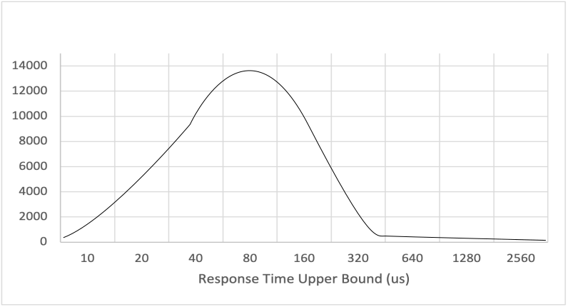
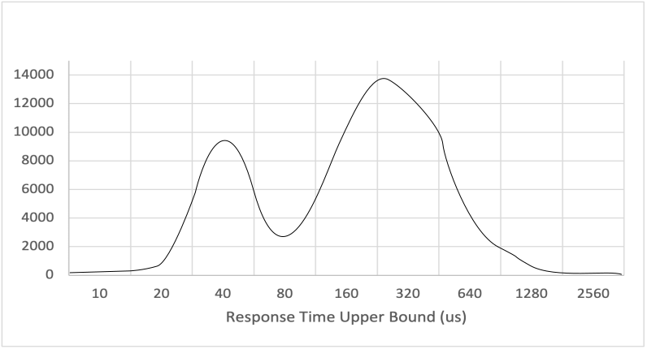
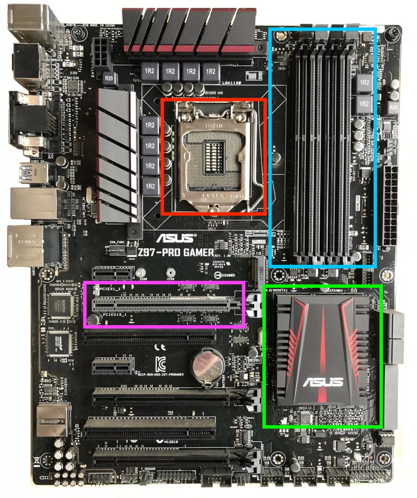
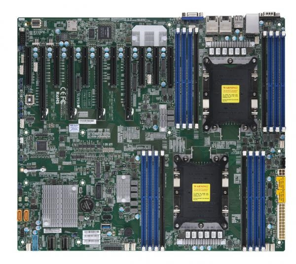
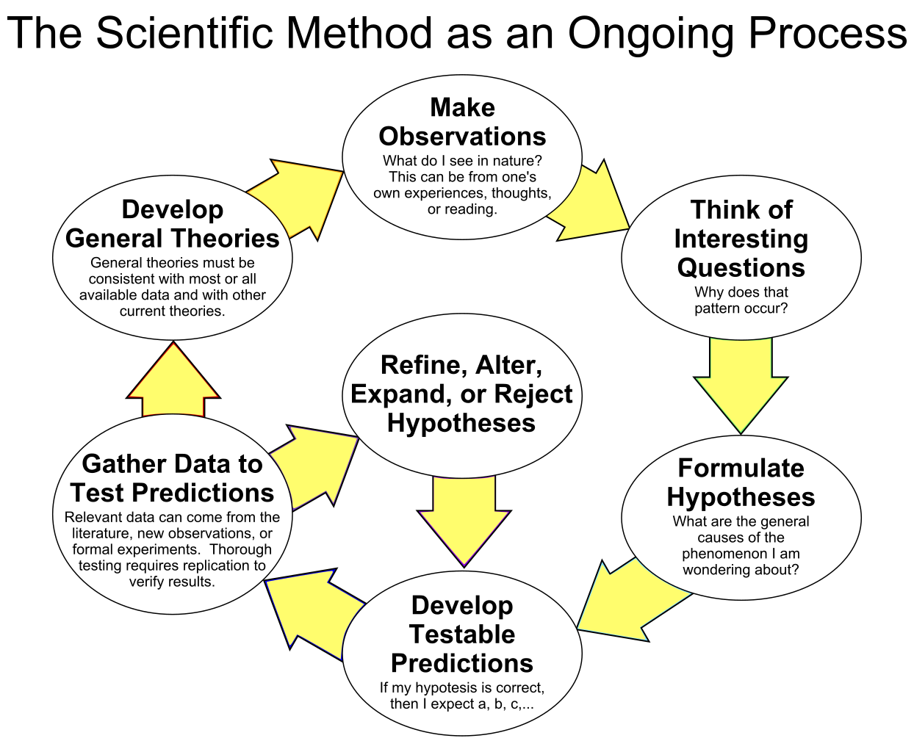

Introductions
Hi there and welcome to this course on Low Latency Java. We start our journey at the hardware and work our way to the JVM, building a deep understanding of our environment. We will cover the operating system and how it plays it's role. Finally we will apply that understanding, designing benchmarks to test our code. At the end of this course you will have a core set of tools that prepares you to work on a latency sensitive java project.
Purpose of this book
The purpose of this book is to serve as both a roadmap and a companions to a MOOC or series of MOOC's on this subject matter. The video lectures will fill in some of the gaps that the book will have, and the book may fill in some of the japs that the video series will have.
Buy me a coffee
If you find this useful, Buy me a coffee. Letting me know how much you appreciate this content will motivate me to improve and expand on it.
Why not just use C or C++?
This is one of the most common questions people ask when first encountering this topic. The simple answer is you should use the tool most appropriate for the job. If speed is the only name of the game, C/C++ is a superior choice. It even gives you the ability to inline assembly for truly crazy performance. The trade offs of C/C++ has a steeper learning curve, lacks a robust dependency management system, and has a higher risk of memory issues. All though can be addressed at least in part by hiring great C++ developers.
So, why do this stuff in Java? The first reason is risk. The barriers to crashing the VM are much higher than they are for causing a sigfault in a C process. It can be done, but java code that has the potential for doing so is often the focus of extra attention.
A second key reason is that Java may already be a huge part of the tech stack. The application may already exist in Java and we want to incrementally improve it and make it faster. Many of the components that our app connects to may also be Java. Even the support stack of the company we work for favors Java applications.
A third reason is talent pool, there are more qualified java software engineers than qualified C++ engineers.
None of these are super convincing reasons, so I am not going to tell you to "Go use C++" or "Java is the way to go". Ultimately, its your decision. And please don't forget to consider new languages like Rust when making a decision.
Copyright
Copyright Erik Helleren, (c) 2021.
Distributed under the Creative Commons CC BY 4.0 license.
Standards
Like most courses, we have outlined a set of standards we want students to be able to meet. Think of them as learning goals for what you should know and be able to do.
If you want, as you progress through this course, you can use this as a to track where you feel that you meet the standard and where you feel like you need improvement.
TODO write more about how to read standards
Theory
- Explain queue theory as it applies to real life and draw analogies to computer systems.
- Define key terms: Service time, response time, utilization, capacity TODO more terms if needed
- Define the types of tests and explain how they are related: Throughput tests, capacity tests, and response time tests
- Explain how queueing theory can result a system having a reasonable service time, but a terrible response time.
- Explain the differences between measuring these values for response time and service time: Average, throughput (operations per unit of time), percentile distribution.
- Identify if a plot is CDF or PDF, and weigh the pros and cons of each when it comes to analyzing performance data.
- Interpret a CDF and PDF percentile plot of a component's service time by identifying modes, tails, and other analogous behavior.
Hardware
- Define the key physical parts of the computer: CPU cores, Registers, L1/L2 cache, L3 cache, CPU sockets, RAM, Networking
- Explain the pipelining architecture of a modern CPU, and how super-scalar execution allows a single core to do many things at once.
- Describe the approximate timings to fetch data or instructions from registers, L1 cache, L3 cache, and RAM
- Describe how communication occurs between CPU sockets on a multi socket server and identify why that may be expensive.
- Describe the key performance counters kept by the hardware and OS.
- Understand the concept of out of order execution
- Describe the branch predictor's job, how it does that job, and why that optimization can cause performance issues.
- Identify which common operations take multiple CPU cycles to execute. i.e. Atomics, Division and modulus, etc.
- Describe how data's location in memory can impact performance
Operating System
- Understand and explain how the OS schedules execution on a CPU
- Explain what a context switch is to a lay person and why its suboptimal.
- Identify when isolating CPU core's is appropriate.
- Identify when pinning a particular thread to a CPU is appropriate and when its not.
- Define the difference between kernel space and user space.
- Describe different actions that happen in kernel space vs user space.
- Explain why kernel space is not a great place to have to go.
Java
- Describe how the JVM compiles class files and what those class files are
- Describe the job of the interpreter and how it does that job
- Describe how Just In Time compiler identifies code to be optimized
- Describe the different compiler levels, and how code can go back to interpreter mode.
- Identify pros and cons of JIT VS statically compiled and optimized code.
- Identify and explain the key ways that JIT can optimize code to perform faster: Inlining, Loop unrolling, Escape analysis.
- Explain why monomorphic and bimorphic dispatch make such a large impact on performance.
- Be able to generate, read and explain compilation logs
- Describe how java allocates memory for stack, heap, and off heap data structures.
- Identify what data is kept on the stack vs what's on the heap.
- Explain the concept of garbage collection and why is great for correctness but not ideal in low latency settings.
- Explain why that, in java, memory locality is rarely achievable with POJO's.
Micro benchmarking
- Describe why micro benchmarking is so hard. TODO this needs to be made more concrete.
- Describe why micro benchmarking should not substitute real tests, but they are still an important tool.
- Identify when JMH is an appropriate choice for testing the performance of some code and when its not
- Author valid unit level JMH benchmarks which utilize state objects correctly
- Design meaningful JMH benchmarks for a given context
- Collect, collate, and analyze JMH results to either characterize a units performance
- Attach appropriate built in profilers to a run and understand their tradeoffs: i.e. GC and OTHERS!
- Identify when its appropriate to use async profiler when benchmarking code.
- Attach async profiler to JMH tests properly to generate flame graphs of cycles and allocations
- Analyze frame graphs to identify optimization opportunities.
Deployed performance tests
- Identify what you are trying to measure with a test before running the test.
- Be able to utilize an appropriate framework for your desired experiment. Know when building a new one is required.
- Identify an appropriate profiler for you experiment. TODO we should look at ones outside async profiler that are readily available.
Key Terms
Response time is the amount of time it takes for a a client application to get a response for a particular input.
Service time is the amount of time our component actually spends working on a request.
Queue theory
The clients of our systems generally care about our response time, which is the time it takes, from their perspective, for their request to get a response. Be that a REST request or some message being sent and received via TCP.
But all our systems all have queues in them somewhere. At the most basic level, our networking stack has RX and TX buffers that queue both our system's input and outputs regardless of if we are using UDP multicast, REST endpoints, or some fancy async messaging bus like MQ or Kafka. No matter what, queues invade our system, and with good reason. They enable our systems to perform efficiently under normal circumstances and handle large bursts of activity with easy.
But there is a downside, those queues can build up and really hurt our systems response time. In general, our service time is the only thing we can change in our application, which is the time that we spend actually doing something.
Littles Law
Littles Law is defined as \( \lambda=\frac{L}{W} \) where \(L\) is is the number of people in the system, \(W\) is the average wait time and \(\lambda\) average service time. This holds for systems at saturation only.
Imagine you are in line at your coffee shop in the morning. There is 1 line, 3 baristas, the average coffee takes 1 min, and 15 people in front of you. How long does it take for you to get your coffee?
So \(\lambda= \frac{1 Minute}{3 Baristas} = 0.33\) and \(L=15\), so we can re-write Little's law as \(W=\lambda * L = 0.33 * 15 = 5 min\). So we have to wait in line for 5 min before we can place our order, this is called the queue time. We then can be serviced, which takes another 1 min for a total of 6 min. However, if we double the service time to make a coffee drink, we get a queue time\(\lambda= \frac{2 Minute}{3 Baristas} = 0.66\) and \(W=\lambda * L = 0.66 * 15 = 10 min\) and a total response time of 11 min.
This relationship between service time, line length, and wait time is intuitive. Yet we seldom consciously apply it to computer systems because the queue is hidden, or we instinctively scale our system out whenever response time spikes or load is high.
A Little Faster
Little's law lets us easily understand and estimate our wait time in a system with a single queue and multiple workers. This is basically our standard web server! A web server has many threads (baristas) working to service requests (customers) in the order they came in as quickly as they can.
Most of us speed up our application by scaling them up by vertical scaling by hiring more baristas and out by horizontal scaling and building more stores. And this is a valid strategy, but what if instead we focused on reducing the time it takes to make a coffee drink?
Lets first consider adding a barista to our equation. If we have \(\lambda= \frac{1 Minute}{4 Baristas} = 0.25\) that gives us a \((1-\frac{0.25}{0.33}) = 25 \% \) speed up. Thats great, and it drops our wait time down from 5 min to \( W=\lambda * L = 0.25 * 15 = 3.75 min \) . But what if instead, we just made it faster and easier to make a coffee. How much faster would we need the coffee making process to be? Well, lets solve for t: \(\lambda= 0.25 = \frac{t}{3 Baristas}\), we get \(c= 3 * 0.25 = 0.75 Minutes\). So, if we can save an average of 15 seconds in the coffee making process per coffee, we can realize the same benefit as adding a barista!
The Leaky Bucket
So we have talked about the working side of the queue, but we haven't talked much about our clients behavior. Little's law formally defines \(L\) as the long term average number of people queued in the system. But this is rarely what we are concerned with, we care most about response times when we get spikes in activity.
Lets imagine a simple bucket with a hole drilled in the bottom. Water in the bucket represents queue of customer requests and we will use this as \(L\) gallons. The water coming out of the bucket is the requests that we successfully respond to and, for the sake of this, we will assume is the constant \(\lambda\) in gpm. And lastly, the flow rate into the system is \(I\) in gpm. The size of the hole in the bottom is inversely proportional to our response time. Lets say for this example our flow rate is \(\lambda = 1\) gpm
TODO Empty bucket with a hole image
We start our application up and our bucket is empty. When our bucket is empty, \(L=0 g\), water flows right through and our queue time is \(W=0\). So long as the flow rate into the bucket never goes above the flow rate out of the bucket, \(I<\lambda\) queue time remains unchanged.
TODO Bucket with water flowing in and out
But as soon as the flow into our system even slightly goes above our flow out of the system where \(I>\lambda\), our queue builds up at a rate of \(I-\lambda\). Lets say, for 10 min, \(I=1.3\) gpm, then our queue depth would be \(L= (1.3-1)gpm * 10 min = 3 l\)
TODO Bucket filling with water
This is bad because, the water coming into the system now has a queue time of 3 min given Little's law \(W=\frac{L}{\lambda} = \frac{3 l}{1 gpm} = 3\). In order to solve for what value of \(\lambda\) we need to have to recover, we first have to decide on a recovery time \(R\) which is the time it takes to clear the queue.
Lets say you want to recover in 5 min from an event like this. We define the drain rate as \(\lambda-I\), which is just the inverse of the fill rate from before. So we need to find \(I\) such that \(R * (\lambda-I) = W \).
\(5 min * (1 gpm - I) = 3 G \\ 1 gpm - I = \frac{3}{5} gpm = 0.6 GPM \\ -I = 0.6 - 1 GPM = -0.4 GPM \\ I=0.4 GPM \)
After all that, we find that if we want to recover within 5 min, our average input needs be less than half what our processing capacity is.
This concept is one of the most often casually ignored ideas behind queue theory. It often manifests itself when asking a question like "What will the recover time be if things get all queued up?". The simple answer is that we can can't know unless we put constraints on our clients (which is rarely possible). If our system normally is at or very near capacity all the time, there is no opportunity to make up for momentary lapses in performance.
Little problems
But wait! Little's law represents a very simple system that does not represent most real world systems. Even in this simple example, we can imagine some individuals ordering very complicated beverages that take much longer to prepare than others. It also doesn't take into account fluctuations in arrival rate. Imagine the Starbucks in Union Station just as a huge train of semi-awake commuters unloads, stumbling over their extremely complex orders.
Under these situations, Little's law breaks down. And sadly, there isn't a great math equation to handle these cases. We have two options to handle this. The first is to build a robust, probabilistic model of our coffee shop and then run a Monte Carlo simulation. We will cover this more in our modeling chapter.
The second option is to run carefully constructed experiment on a real system. In our metaphor, that means having a bunch of people with known orders show up at at known relative times. We will cover this in 2 different contexts, first in our JMH chapter and then again when we look at our application as a whole in our Component chapter.
Final thoughts
Little's law is a critical first step in understanding the behavior of computer systems and the relationship between service time, response time, and request volume. While is difficult to say exactly how real world systems behave with a simple math equation, we can use this law to run theoretical experiments quickly. We will use these concepts later to implement models of our system to see how making an improvement on one part of a component impacts the response time of the whole system.
A review of statistics
One of the most common statistics thrown around the table in most capacity planning meeting is Transactions Per Second or TPS. It is implied that TPS is an average throughput of the system at capacity. There is one problem with that: Little's law says that being at capacity is a dangerous place to be for response time. Most of these tests intentionally fill up the work queue of their victim application and track response time as an afterthought.
So lets look how we can use statistics to measure data in a way that puts latency first.
Standard summary statistics
The standard set of summary statistics is defined as the number of data, the minimum, maximum, mean or average, and the Standard Deviation. For 2D graphs we can also calculate the linear regression line, as well as the std error on that regression.
We are often trained to believe that this is adequate to describe most things, but it actually rarely is. A perfect counter example is Anscombe's quartet as seen below, All the 4 graphs have the same set of summary stats.

When we look at these 4 sets of data, we can see very different patterns, but, again, all have the same average, standard deviation, linear regression, regression error, and more. While this example is extreme, it does underscore the danger of relying on just summary stats. We really need a better way to view our data.
A better approach with histograms
Humans are very visual creatures, and graphs are an amazing tool for visualizing a huge amount of data very quickly. I have seen visualizations whipped up in a few min on R, the open source statistical analysis tool chain, that compress unwieldy data into meaningful visualizations. Numpy can do similar magic. While using both those tools are beyond the scope of this course, I do want us to be familiar with a few key ideas and tools when it comes to analyzing our response time.
Most of these visualizations rely on having a timing for every event or a sample of events to be recorded individually. While exporting this raw data from within the application covering internal service times and queue is ideal, the cost of doing so is often quite high. Packet Capture at both the OS and networking level can help shift the impact out of your application, but the trade off is granularity.
So, lets assume we have 2 values for each message our app gets: the arrival time \(a\) into the system, and the response time \(r\) was fully sent. Using this data, we can compute a service time for each event simply by \(r-a=s\).
Now that we have S, lets make a histogram of that data.

Here is the first problem we run into with visualizing performance data, high tails. So lets re-adjust our buckets to be logarithmic.

Now thats better. But we still barely see our tails. This often happens with perf data, and it may be helpful to log scale our X axis as well. Be careful to ensure that all values are non-0 before doing this.

Sometimes, log scaling the y axis may distort our view of the data, so I recommend carefully inspecting both when looking at data to make sure you aren't lead astray

The last visualization we want to talk about is a Cumulative distribution plot. This is often what is used when visualizing performance data as well, and the function is used in our modeling simulations as well. A view like this is often seen in performance reports for various applications.
The way to view the CDF is that for any value on the X axis, the value of the Y is the probability of a randomly selected value being at or below that X value. By adjusting the bucket granularity and the scaling of the axis we can easily have a CDF show the performance curve for both typical cases as well as at our tails.
A note about these graphs: They are made in excel using made up data. I highly recommend using numpy or R to produce these graphics. Both are able to produce professional looking graphs quite easily, and ones with much better granularity than I was able to make up for data series.
Percentiles
Percentiles are also a great tool for quickly analyzing the tail of our response time graph. The percentile \(p\) of series \(a\) is defined as the first number for which \(p\)% of the numbers in \(a\) are less than or equal to. Most of us are familiar with the Median, which is the 50%'ile.
When looking at the tail, we typically like to look at these percentiles: 90, 95, 98, 99, 99.9. Depending on the volume of the data in the data set, we may also look at the 99.99. We rarely judge an applications performance by its maximum, or the 100%'ile.
So, what do these numbers tell us? Well, the 99%'ile tells us that 99% of messages were processed faster than that value, while 1% where processed slower. When looking at service time, having a spike is to be expected where the 99.99%'ile is much higher than the 50%'ile. We will spend a lot of this class covering why that happens and what to do about it.
Response time over time
Our systems often have transient load and variable interactions by customers. Displaying a time series of our response time distribution can be key in identifying not only surprises in our customers activity, but also our systems.
Let me tell you a story. At a company I worked for, one of our latency critical systems had a very weird behavior. We had super detailed response time data over the course of the day, and we notices that there were 2 "modes" of latency, not explained by queueing when looking at the CDF. We were stumped for days.
TODO graph
Then someone had the bright idea of plotting that data over time and we immediately noticed the weird behavior. Our app was going to some sort of evil mode for a period of many seconds at a time, and then coming out of that mode. In evil mode our service time increased significantly.
TODO graph
That time series view ultimately helped us to isolate the problem. 2 takeaways from this one:
- Capture the finest data you can. You can try capturing every event or a sample of events and export telemetry data on those events to another system for analysis. Or, you can use time boxed histograms to log every few seconds and your favorite logging tool can pease it together for you.
- Don't be afraid to try looking at your data in a different way. CDF vs PDF, individual events vs a histogram, large time windowing vs small.
HDR Histogram
High Dynamic Range Histogram is a wonderful java tool that allows us to track values in a dynamically sized histogram. The buckets are sized to preserve a fixed number of digits of precision, which is great for performance measurements. The larger the values, the larger the bucket. The library outputs this data typically as a table of percentiles, but the data can also be serialized out of the system. It even provides lock free abstractions to record values from many threads and periodically dump the results.

The above example was plotted using data produced from HDR histogram and a tool called HistogramLogAnalyzer. It shows the applications tails, and, unfortunately, conflates latency for response time.
Distribution analysis
Here are some sketches of some common patters we sometimes sometimes see. First is a typical latency distribution that we see. Here we see a single modal distribution with a relatively tight majority of messages. After that there are a few events that have a much higher. These higher percentiles typically reflect both garbage collections and system jitter, although for some workloads they may reflect extremely heavy.

Next we have a bimodal distribution showing that we have 2 distinct modes of operations. This could reflect the applications workload itself, but could also reflect a variety of strange behavior on the operating system or hardware.

Time series data
TODO add some basic time series data.
Coordinated Omission
Computer Architecture: High Level
For this high level diagram, we will be focusing on both single socket and dual socket servers. A Socket is a spot where a single CPU chip can fit into the motherboard. So a single socket motherboard has room for 1 CPU chip and a dual socket motherboard has room for 2 CPU chips. All enterprise CPU's natively support such configurations.
Single socket design
So lets start off with a physical image of a single socket motherboard before we talk about the inner workings of it.
)
We can physically see 5 main components:
- In the red box, we can see the CPU socket.
- In the blue box we can see the RAM slots
- In the green box we can see the motherboard chipset
- In Magenta we can see one of the boards PCIe 3.0 ports.
- On the left edge of the motherboard we can see the IO panel with all our USB and built in networking ports.
But lets break this down a little more to see how the various components in the computer are actually connected.
graph LR; CPU-->MemoryController MemoryController-->RAM; CPU-->MbChipset; CPU-->PCIe3.0; MbChipset-->PCIe2.0; MbChipset-->OnboardNetworking; MbChipset-->USB; MbChipset-->SATA/IDE/SAS; MbChipset-->PCI;
The CPU
The CPU has a lot more detail that we can see here, but its at the heart of the computer. Its where all our code runs, and it also has to handle the hardware and other software thats running on the machine. Things like communicating with your graphics card, connecting a TCP connection, and writing data to disk.
Memory controller
Almost all recent CPU architectures embed the Memory Controller into the same chip as the rest of the CPU. This was to minimize the amount of time it took to access ram. So this means that the CPU's chip is almost directly connected to the ram on the motherboard. Commands to the ram need to fit thru a bus which issues commands to the ram (Writing or requesting data) and receive data back on the data bus.
RAM
Random Access Memory is where our application is typically loaded too. RAM is much slower than the CPU and can easily become the bottleneck in many systems if its not managed well.
PCIe 3.0
PCIe 3.0 is a direct connection between the CPU and an expansion card. Expansion cards are used to specialize a machine more easily. Some example cards are specialty network adapters, graphics cards, FPGA's, storage controllers, and crazy fast SSD storage. Cards have a minimum supported PCIe version, but PCIe is backwards compatible, so a PCIe 2.0 card can be plugged into a PCIe 3.0 port.
The key advantage of PCIe 3.0+ over previous generations of PCIe and PCI is that PCIe 3.0 has that direct connection to the CPU. This reduces the cost of interacting with the cards, and can result in lower latencies and greater throughput.
Motherboard Chipset
The motherboard isn't just a huge PCB. It has its own bit of silicon called a Chipset. Older computers had 2 distinct chips, a northbridge for PCIe and memory access and a southbridge for everything else. Today, most computers have a single chip for the motherboards functionality.
The chipset is responsible for a lot of stuff as we can see in the diagram. Basically everything that the CPU doesn't directly handle itself: USB ports, SATA/IDE/SAS ports, PCI, PCIe 2.x, interacting with the motherboards BIOS, and interacting with the physical sensors on the motherboard like voltage meters, LED's, and temperature probes.
The chip set does not DO anything with this data by itself (after the machine is up and running), it simply provides an interface for the CPU to issue commands to and read data from.
Dual socket design
At the highest level of abstraction, a dual socket and a single socket machine are the same. They allow an application to access all the resources shared between the CPU's.
But as we dig a little deeperThere are some key things to understand about dual socket MB's that most people take for granted that can impact an application's performance in subtle but significant ways.

The first thing I notice about this pictures is that both the CPU sockets have their own hunks of ram next to each other. And thats for a reason: Each CPU chip has its own dedicated RAM and PCIe 3.0 ports. Typicaly the ram around a socket is alligned to that socket. For the PCIe 3.0 port mappings, the motherboards manual should have all the details.
So, why does that matter? Lets look a level deeper.
graph RL; CPU0---RAM0; CPU0---PCIe0_3.0; CPU1---|QPI|CPU0; RAM1---CPU1; PCIe1_3.0---CPU1; MbChipset---CPU0; CPU1---MbChipset;
Non Uniform Memory Access
As the above diagram makes clear, our 2 socket machine is really like 2 machines with a special interconnect. So what does that mean? While NUMA specificaly calls our memory, its now includes PCIe3 slots as well!.
At the heart of it NUMA means that a CPU can access its RAM and PCIe3 cards faster than another CPU's RAM and PCIe3 cards. It's not just faster but more efficient as well. Lets understand why.
Lets say CPU0 in the above diagram wants to access something in its own ram. It contact's its own memory controller (on die), and issues a command to the ram to fetch a particular address. The ram is directly connected to the memory controller so its able to respond quite quickly with the requested data. Lets say all this takes 400 nanoseconds.
Now lets compare that to CPU0 trying to access RAM1. It's memory controler is no help since it doesn't have access to RAM1. Instead the CPU needs to build a message and send it over an interconnect between CPU0 and CPU1. Intel branded their version of this interconnect as QPI and later UPI. This interconnect does a lot, its not just there for RAM access. Its responsible for coordinating between CPU's for anything that is being concurrently modified in chance, communication with PCIe3 cards belonging to another CPU, etc. So its very busy. We might even have to queue our request behind other requests. Either way this takes time.
That request gets sent to CPU1 where it needs to be handled by a CPU core and serviced memory controller to access RAM1, and return the result back over QPI to CPU0 in a new message (which may be queued). Then CPU0 needs to receive that data and put it into its cache. This makes a cross socket memory access strictly more expensive than a local memory access in all but the most memory bandwidth constrained situations.
Similar communication needs to occur for commands to and data from a PCIe 3.0 card. While the CPU is quite fast at executing this communication, and the bus has a massive amount of throughput, this is still extra work and extra time.
Computer Architecture: CPU Design
TODO this page
Computer Architecture: Cache, RAM, and Locality
Data locality is defined as having related data close together in ram. As we will see, having data locality can have huge performance implications.
RAM
Random Access Memory is slow but large. When compared the caches, accessing main memory takes orders of magnitude longer. Often measured in 100's of nanos. Modern systems rely on cacne efficiency in order to keep the CPU fed with instructions and data.
CPU Cache
The CPU cache is higher fast memory for storing data and instructions very close to the CPU.1 The CPU has hardware for checking the cache before going to RAM when it needs new instructions or data.
Most modern processors have 3 levels of cache, conveniently named L1, L2, and L3. Each increase in level increases the size and the capacity. Some CPU designs even split L1 into 2 separate caches, one for data and another for instructions.
Recent Intel architectures like Kaby Lake have 32 kb of L1 data cache, 32kb of L1 data cache, and 256kb of L2 cache per physical core. L3 cache is typically shared at the CPU level and varies depending on which CPU you purchased.
Cache Line
Data is transferred from ram to the cache based on cache lines. Most processors have a cache line size of 64 bytes. This means that the memory controller always asks for 64 continuous bytes. So even if you are using 1 int on that line, you still have to load the whole thing and that eats up your cache.
But more than that, cache lines are aligned with physical memory. This tends to only make a difference when a primitive type straddles the cache line boundary. This can make a measurable difference when parsing certain types binary messages like SBE and FixBinary.
Cache consistence and writing
When we have the same data in multiple locations, we introduce an issue when it comes to writing data back to those caches. CPU's have to not only know when to write back the data to RAM, but also share that new sate between CPU cores, if strongly consistent operations are being performed like atomic modifications. That can get expensive as all instancees of that cache line need to checked and locked before the modification can take place.
Speculation
Modern processors speculate when it comes to their cache content. What that means is that the CPU has dedicated hardware, typically shared between the core and the memory controller to pre-fetch data that the CPU thinks it may need in the future from ram. So that way by the time you need it, its already there.
Speculation works best if your memory access is predictable and not based on pointers. This means for java, that the only way to take full advantage of speculation is to be accessing primitive arrays.
Translation Lookaside Buffer
Modern processors are designed to work with virtual memory efficiently, and they contain a TLB inside of the memory management unit. It is a cache which stores recent translations of virtual memory address to physical memory addresses.2 Virtual addresses have a predefined set of bits which represent a page number(A page is a block of virtual memory), and the rest represent an offset into that page. Modern processors have multiple TLB cahces, typically 1 per core split into multiple segments based on page size.
Nehalem processors for example have 4 L1 TLB's.3 2 Data TLB's with 64 entries for 4 kb pages and 32 entries for 2/4 mb pages and 2 instruction TLB's with 128 entries for 4kb pages and 14 fo 2/4 mb pages. Finally they have an L2 unified 512 entry TLB for 4kb pages. Various different intel and AMD architectures have adjusted these various sizes between generations as they attempt ot find the right tradeoff between TLB misses for generic workloads and transistor counts.
Modern processors also do hardware page walks to find the right page of memory if there was a TLB miss. Ultimately, since the page table is in RAM, it may also be cached, so the CPU checks caches first before accessing ram.
graph TD;
start[Need to load data from ram] --> checkTbl[CPU checks TLB];
checkTbl --> tblHas{Does page exist in ram};
tblHas -->|Yes| physical[CPU Generates physical Address];
tblHas -->|No| accessTable[Access Page Table<br>in cache or RAM];
accessTable --> inRam{Page is in main memory};
inRam-->|Yes| updateTlb[Update TLB];
updateTlb-->physical;
%% Source: https://en.wikipedia.org/wiki/Translation_lookaside_buffer
The above assumes that the OS has not page swapped anything in ram to disk, if that were to happen, the OS gets a page fault and must load the memory segment from the disk.
So, why do we care about this? Lets first remember to context of our TLB it is required every time we try to access anything in memory, even if that item is already in cache! The cache keeps things based on physical addresses. So, this can cause our normal code to have to take a break and go to main memory (in the worst case) in order to access or modify a value we already have in cache.
Now lets imagine we have a full cache miss and a full TLB miss? Now we have to do 2 full RAM reads, one to access the page table to figure out which ram we need to read, and a second to actually get the data.
But we have some good news: CPU designers know about this limitation and have invested heavily in mitigating it. Using speculation, the CPU can try to keep the TLP populated with the relevant entires which can reduce the risk of having a TLB miss. It's also smart enough to use the other caches like L3 cache to store parts of the page table on the CPU to reduce the cost of a miss.
TLB Thrashing
At the same time, having a misconfigured application, or an application that is very inefficient with its ram usage can suffer from TLB thrashing. Thrashing is defined as overuse of virtual memory resources causing very high rates of TLB misses. This happens when the set of active pages in use by a CPU excedes the ability of the TLB to store all those pages. Here, active pages specifically means pages which are used very frequently.
An example of a data structure which might cause serious TLB Thrashing, on a system configured for G1 garbage collection:
public class Example{
Object[] a = new Object[32];
}
LinkedList<Example> aLongLinkedList = getListOfExamples();
for(Example e: aLongLinkedList){
for(Object o: e.a){
o.hashCode();
}
}
So why is this so bad? Well, in java, there is no such thing as locality for java objects. This means that each node in our linked list may be in 1 page, which points to our example object on another page, which has an array pointer which may point to another page. That array can then point to 32 objects each on another page. So to visit just 1 Example object above, we could hit as many as 35 different pages, and as few as just 1. It depends on both how the OS allocated the JVM's ram, and how the JVM has compacted these objects.
Its critical that the TLB miss can rely on L1, L2 and L3 cache to satisfy missing when thrashing is happening to minimize its cost per instance.
Moral of the cache story
They key to having a low rate of cache misses comes down to 2 main concepts:
- Memory Locality: Keep all the stuff that you need to access near each other.
- Limit memory usage in the hot path: The less memory there is being accessed in the hot path, the more likely it will all be in caches.
That is not an easy task when using languages like C/C++, where we can manage our own memory. And its very tricky to do in java. But we will get to that later.
OS Refresher
Most standard definitions of the Operating system put it between the hardware and our applications. It sits as an abstraction and handles setting up and maintaining an environment suitable for running our applications But in reality, the line between app, OS, and hardware is a little blurry.
In general, I am going to refer to standard behavior here in the linux kernel, specifically Red Hat Enterprise Linux. I will be focusing on this general purpose OS rather than a specialty OS simply because its one of the most common OS's.
Scheduler
One of the key responsibilities of the OS it to ensure that all our applications play together nicely. Our systems have finite memory, storage, and networking bandwidth. But the most contented most frequently is compute capacity. The scheduler is responsible for managing the compute resources (CPU cores) and making sure they all have something to do. At the same time its responsible for ensuring that no process monopolizes the CPU to the detriment of other processes.
The schedule maintains a work queue of threads which are ready to do something, and provides them typically with a window of time to do their stuff. If the process is running at the end of its alloted time, the OS preempt the process by performing a context switch, stopping that thread and putting it at the back of the queue.
We go into more detail about the schedule in the chapter titled Working with the scheduler
Context switch's
A context switch takes a running thread and saves its state to ram so it can be paused and resumed later. This happens in kernel mode for most unix variants, which first requires the CPU to shift modes. Both of these operations combine to take a few microseconds.
This is especially pertinent for interrupts, as all interrupt handling requires a context switch.
Dynamic Allocation and Virtual Memory
The OS is responsible for managing the computer's RAM, and providing it to various processes when they ask for it via allocation. Most allocators in modern OS's are dynamic allocators on virtual memory. Dynamic allocators break the physical into blocks and those blocks are provided to the application as allocations occur. Virtual memory means that the application does not know the true hardware address of the ram that its accessing, instead there is a level of indirection the OS maintains to provide a unique virtual memory space for each process.
Fragmentation is the enemy here, where our memory in use gets diluted with large chunks of unused space. If any bit of a dynamic block has yet to be freed by a process, the OS can't do anything with it. C/C++ can not trivially compact their footprint, so its possible for an otherwise correct C application to run out of memory due to fragmentation.
Here are some emergent properties of dynamic virtual memory:
- Dynamic blocks that are unused can be returned to the pool and provided to other processes. Smaller blocks can lead to better efficiency
- Buddy blocks, a type of dynamic allocator which has many pools of blocks based on size, can reduce the risk fragmentation
- The OS can swap out blocks to disk backed storage, often called paging or swapping.
- Each application has its own virtual memory space.
Kernel mode
The OS creates a clear line between user mode and kernel mode. Kernel mode is used by the OS and most device drivers in order to work with the hardware. Kernel mode has elevated privileges down to the hardware level, which is why there are so few things that run in kernel mode. User mode is where our applications run.
Memory is strictly broken down into kernel space which is protected from modification by user applications and user space, where our application runs. Some operations, like turning off the computer, must come form kernel space. With that said, OS's provide API's for applications to call into kernel space to perform various actions.
Kernel mode tasks are also responsible for file IO, network IO, scheduling, memory management, etc. There are many API methods called system calls which call into kernel mode code.
Kernel mode is not free. In order to call a kernel mode method, the CPU core needs to perform a full context switch into the OS with kernel mode enabled, perform the task, and then context switch back. This is an expensive process, and is one of the reasons why we try to limit system calls in the critical path.
Interrupts
An interrupt is just a signal from the hardware that the software needs to do something, and the OS is the software that is the first thing to respond to those interrupts. Interrupts are handled in kernel mode.
One of the things about interrupts thats key to understand is that they preempt the application code running on a core when they are received. This causes a context switch and a latency spike as the application is either migrated to another core, or, if the process is pinned, the OS might just have to wait for the interrupt to complete. The good news is that most interrupts are extremely short, and we can tell the OS to prefer handling interrupts on certain cores.
Networking and most forms of IO (Disk, keyboard) are interrupt driven as those devices communicate back to the application code.
NUMA and Numa Control
As we touched on in our first hardware chapter, multi socket machines have distinct barriers between the CPU's, each having their own RAM and PCIe3+ slots. All communication between CPU's has to go thru a special bus, but luckily the OS gives us a tool to avoid that all together and its call numactl or "numa control". It lets us tell the OS where to run a process's threads and where it should allocate its RAM usage.
NUMA Control
Luckily, linux operating systems give us an ability to put a fence around our processes to force their thread and or memory allocations to be on a particular socket. This utility is called numactl. Its very easy to use, all you need to do is prefix your normal startup script/command with numactl <arguments for numa ctl> <your application start>. The restrictions that numactl places on a process are inherited by all of is children as well.
By default, numa controls are not enabled for a process so the OS will non-deterministically allocate to RAM and schedule your processes thread's.
Working with the scheduler
The most important part of working with the scheduler is knowing how to tell the OS to avoid preempting your latency sensitive process. While there are more exhaustive tuning guides than this, we will touch on the key tools that are used to make that happen.
Isolated CPU's
The first think we can do is tell the OS what CPU's it should isolate, or avoid using for cores by scheduling. We do that with the isolcpus kernel flag. This does require a change to the boot configuration and a box restart. Isolated cpu's will only run threads specifically assigned to that core by the thread using the affinity syscall. For those on the JVM, there is an open source library called Java Thread Affinity by the open HFT project.
So, what does this do? It tells the kernel's load balancing based scheduler to ignore those cores and not consider them candidates for execution, outside of those threads specifically pinned to those cores. This removes the risk of some random task on the computer causing our app to be preempted off of a core and moved around. This can significantly reduce latency, and helps protect the process from things like humans SSH'ing onto the box to investigate logs, or a security agent running a scan. Such users can still do what they need, but they are limited to the non-isolated CPU's to do it.
As a general best practice, it is best to leave at least 1 physical core unisolated per socket. This gives the OS and hardware interrupts somewhere to execute. Remember, hardware interrupts must be handled on the socket that receives them.
Avoid syscalls
Every system call is an opportunity for the OS to take control away from your application thread, but especially calls like sleep and lock/mutex related syscalls. The syscalls that involve invoking kernel mode command even require a full context switch.
Compiling, interpreting, and compiling again
TODO This page
Investigating JIT
TODO This Page
Java and Memory
TODO this page
Microbenchmarking
Microbencharking is like a unit test, but for performance. They run a small experiment on a well defined scope of code in a controlled environment. But we miss out on a lot of the things that happen in real life that harm performance. Large things like a context switch, or a blocking network call. But small things too, like different cache miss behavior. We can even benchmark the wrong thing, focusing on sets of code which don't need to be optimized.
So, why do it at all? The key word above is "experiment". Microbenchmarks are not here to tell us what needs improvement, or to "prove" performance of the real system. Where they excel is measuring the impact of a change. That change could be to input data, or it could be to the code that processes that data.
This means microbenchmarking is broadly suitable for 2 main use cases. First is to help us optimize code that we know to be both frequently used and performance sensitive. Second is to help identify performance regressions.
Microbenchmarking may also be appropriate when modeling a change in an existing system. We will cover building performance models in future chapters.
How it works
The benchmarking harness typically performs the setup you prescribe and then instruments a call to a method. The harness then calls that method many times, typically as many times as it can for a period of a few seconds. Depending on the harness and its configuration, an average call time of each invocation is recorded or a histogram is used to get percentiles.
Inputs
There are 3 main sets of input for a microbenchmark. First is configuration, or how the code is setup to be benchmarked. Second is data, which is often the inputs we pass into our code on each invocation of the benchmark code. The third is context, or what else is happening at the same time.
Typically, there are 2 options for context: Either nothing is happening on the host when the benchmark is executed or there are N threads all executing that benchmark at the same time.
A default choice for configuration is to choose a meaningful config for the test. The other option is to parametrize the config for several different interesting test cases.
Data can either be static or dynamically generated. In practice the data should be consistently generated between runs. That typically means some procedural function that mutates the data across a range and resets. But it can mean a Random object with a fixed seed used to generate data. Always clearly define your data and why it is the way it is. And make sure you understand the impact the data has on your experiment. The second most common issue with microbenchmarks after misapplying them is poor choices for data.
Component benchmarks
Its quite easy for microbenchmarks to blend into component level benchmarks. This is not a bad thing, just something to be mindful of. The larger the scope, the more important it becomes to have data variety in your benchmarks. This can be accomplished thru having parametrized benchmarks or pusdo-random data.
Peer review
While most of us are use to a code reviews, focused feedback should always be solicited on our microbenchmarks. Asking someone else familiar with the concept what they think your benchmark is doing and looking for pitflls with it. They should also review data collected and conclusions.
This is critical to do before sharing results with someone who isn't familiar with the limitations of micro benchmarking. Paying special attention for likely assumptions readers may make.
Lastly, be a friend and peer review others work thoroughly. They would prefer candid feedback over letting a mistake get through that could cause confusion or production issues.
Service time
A microbenchmark only measures your applications service time, it can't measure your response time. This is an intentional design limitation of microbenchmarking tools. Never claim that a microbenchmark result, or a response time of a system under minimal load is the performance number that clients will care about.
What use use data for
Microbenchmarks are never to be conflated with real world performance. They do not tell us how fast we expect to be in prod. So, what do they tell us?
They give us a measurement without a great unit. When using sample time our units are "nanoseconds per invocation on this particular machine given the conditions present at the time of the benchmark given the benchmark is pretty optimistic about noise". Which isn't super useful in isolation. Kind of like the origional cubit (a measure based on the arm length of the measurer). So, how can we use our time cubit's?
To put it another way, we don't have a standard to use to measure everything else against. For the killogram, there is a prototype by which all scales are calibrated.
To solve this problem we simply don't use the time. We use our measurement to compare 2 different unknown quantities and establish a ratio between the two. This might seem counter intuitive, but by doing it this way, we actually factor out most difference in CPU architecture, which can vary wildly between manufacture and iteration.
So, when looking at a particular benchmark, what can we measure it against? Most frequently, previous runs of itself. This is useful for regression testing to make sure we didn't get slower. Its also great for optimization testing to assert we got faster. Another option is to compare it against similar benchmarks. Imagine we have some bit of code that operates in 3 modes. We know how mode 1 behaves in production. We can use microbenchmarks to model with modes 2 and 3 would look like in production by simply comparing their results against mode 1.
JMH: An introduction
Java Microbenchmarking Harness, often just called JMH, has been a long standing tool produced by the same team that created the OpenJDK. Its widely available and can be executed/included via a maven dependency and plugin. Below you can see an example to generate a project with maven.
mvn archetype:generate \
-DinteractiveMode=false \
-DarchetypeGroupId=org.openjdk.jmh \
-DarchetypeArtifactId=jmh-java-benchmark-archetype \
-DgroupId=com.lecture \
-DartifactId=benchmark \
-Dversion=1.0
This generates all you need to start with a JMH benchmark. Not only are there JAR dependencies, but JMH requires some extra plugins that decorate your bytecode, and it will even generate a portable uber-jar for testing. Take some time now and add a dependency on a library or app you want to test with that you are familiar with.
I also highly recommend installing the JMHack plugin for IntelliJ for running JMH benchmarks. It allows you to directly execute individual benchmarks from the IDE and set any parameters just as though you were on the command line.
To run the tests manually, first run mvn clean install and then java -jar target/benchmarks.jar. Run with -h to see all the command line options.
Generally, JMH benchmarks are treated as production code and live in src/main within their module. With that said, benchmarks should be in a seperate module from the production code they are benchmarking. Typically, benchmarks should be versioned with the code they are measuring, in the same repo and parent project.
Your first Microbenchmark
Lets make your first microbenchmark. We are going to test to see how long it takes to create a HashMap and add 3 elements to it.
public class Intro_1 {
@Benchmark
public Map<String, Integer> testMethod() {
Map<String, Integer> myMap = new HashMap<>();
myMap.put("a",1);
myMap.put("b",2);
myMap.put("c",3);
return myMap;
}
}
JMH lets us return objects from our benchmark methods. Returned objects will be passed to JMH's black hole. This is an object that JMH manages for us which ensures object is 'used' in the eyes of the JVM. This prevents JIT Dead code elimination. It also prevents on stack allocation as the object is considered to escape to scope you are working in.
We can try to run this, but that will take over 8 min. So lets introduce a few ways to adjust that timing
@Fork(1)// Only fork the JVM 1 time to run the tests.
@Warmup(iterations = 1, time = 5)//Warmup for 1 trial, which is 5 seconds
@Measurement(iterations = 1, time = 5)//Measure 1 trail, which is 5 seconds
@BenchmarkMode(Mode.AverageTime)// Take just the average, Mode.SampleTime frequently use
@OutputTimeUnit(TimeUnit.NANOSECONDS)// We want our output to be in nanoseconds
public class Intro_2 {
@Benchmark
public Map<String, Integer> testMethod() {
Map<String, Integer> myMap = new HashMap<>();
myMap.put("a",1);
myMap.put("b",2);
myMap.put("c",3);
return myMap;
}
}
The above parameters are setup for rapid feedback, but the general best practice is more forks and more iterations for both warmup and measurement. The good news is that all of those parameters can be overridden on the command line.
The importance of warmup
Warmup is a critical feature of the JMH framework. The warmup is designed to get the JVM to do its job so, by the time you start measuring, the code is fully compiled and optimized.
While JMH uses time to limit the warmup, its a good idea to setup the benchmark such that there will be well over 10,000 invocations of your benchmark method across.
Testing intepererated code
There are very few cases where you want see how your code behaves before it is compiled. Examples include startup code, or code that is run infrequently. This can be accomplished by running your benchmark with the -Xint JVM flag. Simply add it to your fork annotations jvm args like this: @Fork(value = 1,jvmArgsAppend = {"-Xint"})
Please verify with your JVM that the above flag is the correct flag to disable the compiler and run in inteperated only mode.
Introducing state
State is critical in running most of our benchmarks. Here is an example of a state object. JMH handles creating and managing our state objects for us.
@Fork(1)
@Warmup(iterations = 1, time = 5)
@Measurement(iterations = 1, time = 5)
@BenchmarkMode({Mode.SampleTime, Mode.AverageTime})
@OutputTimeUnit(TimeUnit.NANOSECONDS)
public class Intro_3 {
@Benchmark
public void testMethod(SomeState s, Blackhole bh) {
s.myMap.put("a",1);
s.myMap.put("b",2);
s.myMap.put("c",3);
bh.consume(s.myMap);
}
@State(Scope.Benchmark)
public static class SomeState{
Map<String, Integer> myMap;
@Setup(Level.Trial)
public void setup(){
myMap = new HashMap<>();
}
@TearDown(Level.Iteration)
public void cleanUp(){
myMap.clear();
}
}
}
We can define State for one of three scopes. Thread scope is we create one instance per thread. Group, each thread group will share one instance. We will talk about thread groups later. Lastly, Benchmark is for all threads running the benchmark.
There are also Setup and TearDown annotations with their own level to indicate when they should be executed. Invocation level is executed before/after each call to our benchmark method. Iteration is done before/after each warmup and measurement iteration. And lastly, Trial is for a full fork of the benchmark and all iterations.
With that said, per the JMH documentation, the invocation level is "A SHARP TOOL" and "HERE BE DRAGONS!". There are several warnings there that should be understood before using it. If you aren't sure if you should use it, don't. In the next chapter we will see a strategy for getting varied data without using a per-invocation setup method. Usages of the invocation level in this chapter is just to show some basic benchmarking concepts and is not an endorsement of using that level in that specific context.
There are also two more tweaks to our benchmark above. First, we are using an explicit blackhole that JMH provides to us. We can do something similar for our setup and Teardown methods if we need a BH there, just adding it as a paramemter. Second, we ran in both average time and sample time mode in the mode.
Each mode involves JMH running the whole set of benchmarks over again, so its typically best to pick one and stick with it unless you really want to see both. Here is the output of our above test.
Benchmark Mode Cnt Score Error Units
Intro_3.testMethod avgt 36.507 ns/op
Intro_3.testMethod sample 160086 35.889 ± 2.033 ns/op
Intro_3.testMethod:testMethod·p0.00 sample ≈ 0 ns/op
Intro_3.testMethod:testMethod·p0.50 sample 41.000 ns/op
Intro_3.testMethod:testMethod·p0.90 sample 42.000 ns/op
Intro_3.testMethod:testMethod·p0.95 sample 83.000 ns/op
Intro_3.testMethod:testMethod·p0.99 sample 84.000 ns/op
Intro_3.testMethod:testMethod·p0.999 sample 125.000 ns/op
Intro_3.testMethod:testMethod·p0.9999 sample 12029.494 ns/op
Intro_3.testMethod:testMethod·p1.00 sample 55744.000 ns/op
It should not be surprising by now to see large tails like this at the higher percentiles now that we know how Java works. But what is surprising is the difference between the median of 41 and the average of 35.
This difference is intrinsic to JMH, and easy to explain. For average time, the benchmark has to keep track of a counter, the benchmark start time, and its end time. For sample mode, time needs to be taken before and after each call to our method. So what we are seeing is the cost of calling System.nanotime().
Test coverage for benchmarks
Most of the next few chapters are focusted on building valid benchmarks for experimentation. But we should treat any long lived benchmarking code as any other code we develop. My long lived, I mean benchmarks which are both checked into with the production code or expected to be used as part of a regular CI or regression testing.
I generally like to think as JMH state objects like shared testing fixtures. They should be unit tested if they are doing anything complex. If I were to perscribe a rule for this, I would say you need through unit testing if there is a bug you track back to that state object once.
Benchmarks on the other hand are like unit tests, and should not be tested themselves. We should rely heavily on calling production code in our benchmark method, which should already have through unit test coverage.
Don't waste time benchmarking code which isn't already tested. If the code you are trying to benchmark isn't covered thoroughly in your existing test suites, invest your time there instead!
Parameters
Parametrization is very useful for running a single benchmark with many different modes. JMH will test ALL permutations of parameters, so use them wisely. You can override each parameter at the command line as well, which makes for a lot of flexibility when integrating JMH tests into a CI.
JMH supports Parametrization of primitives, Strings, and Enums.
@State(Scope.Benchmark)
public static class SomeState{
Map<String, Integer> myMap;
@Param({"20", "50"})
public int insertions;
@Setup(Level.Iteration)
public void setup(){
myMap = new HashMap<>();
}
@TearDown(Level.Invocation)
public void cleanUp(){
myMap.clear();
}
}
Each state object has its parameters managed independently. JMH will execute all permutations of all parameters per state object. Primitive Params are likely not the right tool to use if you have many different knobs which are mutually exclusive, or otherwise invalid. We will look at an example later that demonstrates using enums to solve this problem.
Debugging JMH tests
Debugging a JMH test is actually quite easy: Just set forks to 0 and run the debugger. JMH will tell you that you should not use any measurements taken while forks is 0 to form conclusions, but thats ok, we are just trying to figure out why our test is broken.
JMH: Pitfalls
JHM has a lot of pitfalls, and we are going to call out a few things to pay special attention to before you go off writing your first JMH microbenchmarks.
Unintended JVM optimizations
Loop optomizations
The JVM has a variaty of tools at its disposal to make loops faster. Unrolling smaller loops, and vectorizing operations for simple loops. A simple rule of thumb is to avoid loops in your @Benchmark method unless they are part of the code you intend to run in production.
Constant Folding
The JVM is smart enough to identify literals which are being evaluated in a statement and fold them into a new literal. For example 98*192/6%9 > 4 would actually be folded into true. This can make a significant impact once you get into the sub 100 nano range.
Dead code elimination
The JVN will skip what it decides is dead code, or code which has no side effects. This can get as severe as no executing your target code at all if there are no discernable side effects. As we showed before, the Blackhole or returning values from @Benchmark methods can prevent dead code elimination. A reminder: the Blackhole is not free.
Scope is too small
Given that the word micro is in the name, we may be tempted to try to make them as small as can be. Testing tiny scopes of code like appending to a buffer, or sorting an array thats 2 elements. So, how do we know when we cross that line?
The time can be a good hint. Lets say multi-unit benchmark, which covers the time it takes to fully process some unit of work and send its result downstream is \(t\). In general, the unit we are benchmarking accounts for less than \(\frac{t}{10}\) time we should be skeptical that we our unit to benchmark is large enough. That is aggregated across all calls to our unit though. So if we have many calls to that unit, a smaller scope may be appropriate. But even then, very small scopes can cause problems.
Loosing sight of the bigger picture
Related to the scope being too small. Sometimes we just lose sight of whats really going on in the system. Microbenchmarking some edge case, or something we expect to happen very rarely can be counter productive. We should focus on the units which have the largest impacts on our thread's execution time. And likewise, we should focus on threads which are in the critical path, not side threads.
A keen knowledge of the system can help avoid this pitfall. So can applying sampling profilers to identify hotspots in your code that justify additional investigation. Just make sure that your profiler is appropriate for what you are trying to measure. Async-profiler is generally a good tool for this case, and can be attached to the process in test environments as well as production.
Not knowing what you want to measure
JMH is a tool to run experiments, in the same way that chemistry lab is setup to run chemistry experiments. It still requires a thoughtful scientist to design meaningful experiments and interpret results. Most of all, that scientist must question their methods and conclusions. This puts a lot of responsibility on you, as the scientist!
If you feel that its helpful, write up what you are trying to measure before you start working on the benchmarks. Have a review after you are done by a co-worker to validate that your benchmark is doing what you expect. Convert the numbers into meaningful conclusions and, again, get them validated by a peer.
Often times, we aren't trying to optimize just for response time, but also variability. Things like allocations can cause garbage collection pauses down the line. High variability in the run time of your applications code can cause erratic queuing time behavior.
Measuring external systems
JMH is designed to measure the time it takes for a method to execute. If that method depends on a remote service, or makes a blocking network call, that can invalidate results. Tests like this are best run as component or integration benchmarks rather than microbenchmarks.
If you feel the need to execute these as microbenchmarks, try to insert a mocked service into the code path to avoid the network call. If you really need the network call, deploy a dedicated instance of the service locally.
Measuring queues by accident
Microbenchmarks excel at directly measuring service time of our code. But once we introduce multiple threads working in concert in a pipeline, we stop measuring service time and start to measure response time. This is because there must be a queue between the two threads. Typically this is a sizeable queue, but evn if its one element, our benchmark is going to behave in a wonky way.
Lets first look at a queue depth of 1. When we have a queue depth of 1, our caller will have to block when it attempts to enqueue the item, or drop it.
sequenceDiagram
participant BenchmarkThread
participant Queue
participant WorkerThread
note right of BenchmarkThread: Start Sample 1
loop Enqueue Item1
BenchmarkThread->>Queue: Item 1
end
note right of BenchmarkThread: End Sample 1
note right of BenchmarkThread: Start Sample 2
loop Enqueue Item2
BenchmarkThread->>Queue: Item 2
end
WorkerThread->>Queue: Get Item 1
note right of BenchmarkThread: End Sample 2
note right of BenchmarkThread: Start Sample 3
loop Enqueue Item3
BenchmarkThread->>Queue: Item 3
end
WorkerThread->>WorkerThread: doing work
WorkerThread->>Queue: Get Item 2
note right of BenchmarkThread: End Sample 3
Above we see a sequence diagram where our queue size is 1. Our first sample is just the service time of the queue, so we got very lucky. Our second sample got slightly unlucky, and the queue was full when it got there and needed to block, waiting for space to free up. Which happens when the worker thread gets the first item from the queue. Sample 3 got the most unlucky, which had to wait for not only all of the work for item 1 to be completed, but also for a fetch from the queue.
So, in our simple queuing example, what do we end up measuring exactly? Its not queue time, as we don't know the time between when Item 1 is put into the queue and when its removed from the queue. Very specifically, we are measuring response time with an unknown interarrival behavior at a known average interarrival rate. We will touch on this in our macro benchmarks chapters, but suffice to say, that is probably not what we are looking for.
If we need to measure the service time of the first thread of a multi-thread pipeline, we can do that in a way thats likely to produce valid results. We need to only do 3 things:
- Make our measurement iterations short enough such that they never fill up the queue. Compensating by having more measurement iterations.
- Make the queue large.
- Make sure you flush the queue in a
@TearDown(Level.Iteration)method. This ensures the queue doesn't fill up between runs.
If you are measuring a 3rd party library that doesn't expose a flush operation, our options are a little more limited. A last ditch can be to have a sleep timer in the teardown method, but finding the right time to sleep is its own experimental adventure!
Steady state
Aleksey Shipilëv puts it best in his blog Nanotrusting nanotime, in the section Steady State Considerations. We have to be careful about what state is kept around between iterations.
We have three practical options for managing this:
- Shorten the measurement time significantly. This doesn't really solve the problem, but for complexity that gros linearly, it can minimize the problem.
- Manually reset the state in the benchmark itself. If the benchmark is very long, a
@TearDown(Level.Invocation)method may make sense. But baselining the reset may be difficult, especially if it isn't constant time. - Reverse the action taken. If you are implementing the command design pattern you may be able to undo or reverse the actions the benchmark took faster than it would be to fully reset the object. Even without applying the command pattern, many systems can have the reverse transaction done.
- Probabilistically steady-ish state. Create a set of input data which is net-0 and iterate it thru it. This prevents the state from diverging uncontrollably.
- Clone a known state at the start of each benchmark run. While sometimes expensive, each run has the exact same data and this is very easy to baseline.
With that said, we may WANT to see what happens as our object gets saturated with more and more and more state. Thinking of the Fibonachi example seen below, we have some options.

We can do this by applying similar principals as above with one distinction: We simply initilize the object as part of the state setup per iteration to be saturated to a known level. To build out a curve of how our object behaves at various levels of saturation, we can parametrize the level of saturation.
JMH: Designing good benchmarks
There is a measure of knowledge and skill required to build good JMH benchmarks. This is true at the single unit scale and at the multi-unit scale. I am hesitant to use the term "component" here because JMH tests should be directly calling code, not interacting with an API.
Data
The data we choose for any benchmark is critical. For each domain good data looks a little different. I do have a few prescriptions for success.
- Vary data per invocation when possible, generate it at the iteration level. Use a circular Array to provide data to the benchmark.
- Parametrize different modes of data, when appropriate. For example, if you are testing a sorting function, test with mostly sorted data, prod like data, and worse case data as 3 separate test runs.
- Have intent behind your data, even if you are generating it. Your data should reflect the context of your benchmark and the code that is going to be executed.
- Explicitly state your assumptions somewhere, ideally thru very clear code.
Common Techniques
Use enums for configuration
Enums are ideal for configuring a benchmark. Imagine you have an application where a customer could subscribe to a data feed with many parameters. Each defines transformations on the raw data that needs to be performed. Not all transformations are compatible, and, even if they were, there are far too many to test. We can use Enums to easily define many different test modes.
Lets imagine we are testing an in memory data structure which holds some online auction data. And we want to subscribe to changes in its state its state.
@State(Scope.Benchmark)
public static class SomeState{
Callable<CharSequence> subject;
@Param({"BASIC_ALL_PRODUCTS", "BASIC_ELECTRONICS"})
public SubscriptionTypes type;
@Setup(Level.Iteration)
public void setup(){
subject = type.buildDataPipeline();
}
}
public enum SubscriptionTypes{
BASIC_ALL_PRODUCTS{
@Override
public Callable<CharSequence> buildDataPipeline() {
return buildPipeline(5, 0, "ALL");
}
},BASIC_ELECTRONICS{
@Override
public Callable<CharSequence> buildDataPipeline() {
return buildPipeline(5, 0, "Electronics");
}
},MEGA_QUERY{
@Override
public Callable<CharSequence> buildDataPipeline() {
return buildPipeline(250, 0, "ALL");
}
};
public abstract Callable<CharSequence> buildDataPipeline();
}
There are a couple things to note in the above code that are important when using enums. First the enum should build the state for you each time its method is called. This gives the benchmark the power to say when that object is built. The instance is stored in an instance field on the state object.
Next, this example is very simple, but we can see a potential need for passing in arguments to our enum builder form our benchmark. This is often the case if our benchmark is setting up something that our pipeline here depends on.
Limit use of invocation setup
Per the java docs, we should be very careful using a per invocation setup or teardown. PLEASE be very careful if you want to use it, and understand all the warning.
Varying data between invocations
We do want to vary our data, when possible, within a benchmark iteration. This helps us avoid some JIT optimizations by keeping the data changing. Whats more, is avid some overly optimistic cache efficiency.
Lets look at this example.
@Fork(1)
@Warmup(iterations = 1, time = 5)
@Measurement(iterations = 1, time = 5)
@BenchmarkMode(Mode.SampleTime)
@OutputTimeUnit(TimeUnit.NANOSECONDS)
public class Design_3 {
@State(Scope.Benchmark)
public static class SomeState {
public Consumer<StringBuilder> subject = (s) -> { Blackhole.consumeCPU(4000); };
@Param({"200"})
public int numberOfData;
@Param({"123456"})
public long randomSeed;
private List<StringBuilder> data = new ArrayList<>();
private int nextIndex = 0;
@Setup(Level.Iteration)
public void setupData() {
Random r = new Random(randomSeed);
for (int i = 0; i < numberOfData; i++) {
data.add(Helpers.generateData(r));
}
}
public StringBuilder getNextData() {
nextIndex++;
return data.get(nextIndex % data.size());
}
}
@Benchmark
public void testMethod(SomeState s, Blackhole bh) throws Exception {
s.subject.accept(s.getNextData());
}
@Benchmark
public StringBuilder baseline(SomeState s) {
return s.getNextData();
}
}
So lets break down what is happening here. Lets start with our state object. We start of with a subject, which is what we are trying to benchmark. This would be our production Object that we want our benchmark to call into.
Next, we expose the number of data entries. The scope of our data can impact our cache efficiency, and by exposing it as a param we can adjust it from the command line if we wanted to.
Next, we expose our randomSeed as a param so, if we wanted to, we could run multiple different tests with differing seeds if we want to. This lets us be confident that we didn't get a lucky or unlucky.
Next we have our fields for data and our nextIndex. We just us a regular array list for storing this data. Any data structure is suitable here that has either constant time indexing, or has a built in circular ability that is constant time. One thing to note in the getNextData function, is that we are just doing math to calculate the index to get, and not branching.
if(nextIndex>=data.size()) nextIndex=0;
We could easily envision the above line in this code, but branches are tricky as we noted in the hardware chapter. This would introduce jitter into our benchmark method, all be it a very small amount. Using a modulus avoids that jitter. The irony is that its much more expensive than the if. But that stability is golden.
Lastly we not only have a testMethod that is our real benchmark, but we also have a baseline. This baseline can be used to see how expensive getNextData really is in this context. While we might not need it here, its good to have this data handy.
State is not limited to inner classes
While in most of these examples, state is an inner class of the class that defines the benchmark methods, that is not required. There are no limitations placed on @State objects, besides that Param fields are public and there is a default constructor. We can include as many or as few as we want for each benchmark method.
This means they can have behavior in addition to state, just like any other class. This lets us build modular state, composing what we need for each benchmark.
With that said, we must be careful. Behavior takes time, so we should always baseline interactions with our state objects. This lets us subtract out their contribution to the measured service time of our benchmark.
Peer review
Performance testing is a science, and like any science there are a few key points. We all have seen diagrams like this before, going back to grade school.

As we can see here, science is an ongoing process, but there is a critical part of science that is missing in the above diagram. And its peer review. At each stage in the above diagram, we should be checking in with our peers. Should I even write a microbenchmark? What do you think of this my hypotheses? Can you review my procedure and data for potential errors? Do you think my conclusions are justified based on the data?
All of these are questions we should be asking when writing microbenchmarks. Not only should you expect to be challenged, you must seek out challengers to be confident in our conclusions.
Unit level benchmarks
Unit level benchmarks are designed to primarily test a single class of code. Maybe 2 tightly coupled classes like a custom record store and a manager of that record store can fall under this category as well.
Grouping operations
The first step to unit level benchmarks is making sure that your unit isn't too small. Benchmarking data structures are a good example of a situation where to measure the unit, it may be best to perform some meaningful workload. Using a map as an example, measuring the call time of a put in an empty map isn't very interesting. Measuring 3 puts and 5 gets into a pre-initialized map is more interesting.
You can define this test behavior right in the benchmark code. I.e. a 90% read, 10% write workload could define 1 operation as 9 reads, and 1 write, and then have a few different permutations of that workload across several benchmarks.
With all this said, this should not be our default. By its very nature, JMH will see our whole benchmark as one measurement and then simply divide our work which can soften outliers significantly. Imagine if 9 out of 10 reads are 0.1 us, and the 10th is 19.1us. JMH in SampleTime mode will see this workload as 20us. But we would get the same result if each call to read took 2.0 us.
This simply means we have to be careful when we talk about our results, and it limits the conclusions we can draw from them.
The @OperationsPerInvocation(3) annotation can be tempting to normalize results, but do try to resist the temptation. While this may normalize or average, it skews your error and changes the meaning of your percentiles significantly.
Grouping may be a necessity in order to keep the subjects in a steady state.
A need to use average time
At a certain point, the observer affect starts to dominate our sampleTime measurements. Taking nano precision and timestamps before and after each invocation takes typically 10-40 nanoseconds, milage will vary significantly based on JDK, OS, and hardware setup. And even then, different OS's and hardware have different granularity of nanotime. There is a wonderful article on this called Nanotrusting the nanotime.
Generally, we should be skeptical of using sample time once our methods call time on average is less than several times nanotime's granularity on our platform. And the only way to know that is to test it.
The unit level sweet spot
Assuming a typical setup where nanotime accuracy and granularity are <30 ns, we should aim for unit level benchmarks that are greater than 250 ns (Circa 2021). This is simply because JMH may struggle to measure our method in sample mode.
Just because that is the sweet spot, that does not mean we can't write benchmarks that test things that are faster than this. We just have to be extra careful and ensure that our tests are actually testing what we intend for them to test.
Multi-unit benchmarks
Multi-unit benchmarks are ideal for measuring up to and including all the work that happens in a single thread in production. This is because our benchmark method should be synchronous.
Knowing how to group units
There is 1 rule to follow: measure service time. As mentions earlier, we typically don't want to measure queue time. This means we should not create threads outside of the threads that JMH makes for us. So, a great group to start with is with whatever is currently your thread boundaries in your application.
Well designed code should be easy to synchronously push data into and either return output data or push it to another queue. Either way, output data should be sent to a blackhole.
Dealing with dependencies
All of our code relies on dependencies and abstractions, both of our own creation and those provided by others. However, we sometimes want to focus our benchmarks on our interactions with and around that dependency. So, how can write good benchmarks in these situations?
Stub, don't mock
Mockito and other mocking libraries are amazingly powerful tools for writing good unit tests. Mockito is easy to learn, straightforward to apply correctly, thread safe, and validates your code with ease. It is not, however, performant. The same properties that make it easy to use, make it very slow, and highly variable: Locks, reflection, variable state and allocations. This is driven by the mock pattern, which tracks the calls to each method. These properties make it unsuitable for microbenchmarks.
A stub on the other hand is an implementation of an abstraction that has either special testing behavior or predefined data. Stubs are just regular classes we implement for the purposes of our benchmark, nothing special beyond that.
A good stub for a microbenchmark should:
- Comply with the Liskov substitution principle, which says that our stub should behave similarly to the real thing. We don't need to handle all the cases in our stub, just the ones that our benchmark will hit.
- Have predefined and preallocated data. Preallocating the data avoids allocations in the middle of the test, which can cause issues.
- Blackhole or use all inputs. This ensures that they are properly consumed. To get the BH to your stubs, construct them in setup methods.
- Simple or tested. A simple stub is an easy one to prove correct. If the stub is complex, you should add tests for it.
- Streamlined or Baselined. Our stub should be clearly fast if possible (i.e. returning a known primitive of single string). If our stub has much more than 2 statements in any method, We should know how the stub behaves in isolation before we throw it into the system.
Not all these properties are attainable for all systems. For example, if your stub has to generate mutable objects that the subject may hold onto for the life of the benchmark.
Knowing when to stub
For microbenchmarks, there are a few signs that we should look towards a stub. With that said, considering a stub doesn't mean we should blindly use one. Really think about what you want to measure in your benchmark. It can be valid to run the same test, both with a stub and with the real implementation as well.
Here are some situations where a stub for a dependency or unit may be more appropriate than the real implementation
- Publishing data somewhere. Examples include TCP, UDP, Kafka, MQ, etc.
- Receiving data from somewhere. Be it REST, TCP, or something else.
- Fetching data to satisfy a request from a remote system. Like loading data from hibernate or a rest endpoint.
- Committing data the a database somewhere.
The above list of examples is not exhaustive. As noted before, there are valid reasons to include the 'real' version of each of those in a microbenchmark. With that said, there are also reason to exclude them. Its critical that we weigh these options when designing our experiments.
Dealing with external dependencies
For some of our benchmarks, we need to have real dependencies like a database, a rest endpoint, or a sidecar application. Its important that these processes are nearby, isolated, available, and instrumented. Let's use a simple DB as an example: mysql.
For our benchmarks, we should have a mysql server locally, on the same box as the benchmarks. This minimizes the network latency, which may be significant and variable. Next, we should ensure that no one else is using that mysql server, including other processes on the box. We should also make sure that the DB is in a consistent and clean state for each benchmark. Availability not only refers to it being ready to serve, but also that it has been setup with all the appropriate data required for the benchmark. Finally, we want some level of instrumentation on the DB with the goal of proving that its not the bottleneck.
All of these considerations increase the consistency between iterations and benchmarks. This increases the likelyhood that any differences between 2 runs are related to the code instead of the environment.
If you prove the DB is the bottleneck, thats actually great data! Once you identify the constraints of the subject code which saturates the DB, you can then go about trying to remediate the problem. You could increase capacity of your local instance by increasing the resources it has available. If need be, point the persistance to a RAM disk to alleviate disk bottlenecks. Resist the urge to just scale up, as now your target is no longer all on your benchmark host. Lastly, inspect your interactions with the DB, and see if they can be optimized or minimized.
Many dependencies have testing tools used for unit tests which automatically setup a real, or very close to real, application. For example, embedded redis spins up a real redis binary. Junit kafka allows you to startup a kafka broker or cluster in process. And there is always Test Containers, which allows you to orchestrate any containerized service as part of your tests. With that said, it is on you as the engineer to understand how these tools work and what impacts they may have on your benchmark. While they may be connivent, they can significantly impact results.
Core Profilers
JVM ships with several general purpose profilers that can give us some useful data about our benchmarked code. We can enable as many profilers as we want on a run. All the profilers are attached to the same run, so this does not impact the run time of our benchmarks.
GC profiler
The GC profiler hooks into the standard mBeans to track allocations and garbage collection behavior. Enabled by simply adding -prof gc to your command line, it does not take any configuration/arguments. The output varies not only based on which garbage collector is in use, but also the behavior of your application. Below is some sample output.
Benchmark Mode Cnt Score Error Units
Intro_2.testMethod avgt 20.783 ns/op
Intro_2.testMethod:·gc.alloc.rate avgt 9336.294 MB/sec
Intro_2.testMethod:·gc.alloc.rate.norm avgt 224.016 B/op
Intro_2.testMethod:·gc.churn.G1_Eden_Space avgt 9377.543 MB/sec
Intro_2.testMethod:·gc.churn.G1_Eden_Space.norm avgt 225.006 B/op
Intro_2.testMethod:·gc.churn.G1_Survivor_Space avgt 0.072 MB/sec
Intro_2.testMethod:·gc.churn.G1_Survivor_Space.norm avgt 0.002 B/op
Intro_2.testMethod:·gc.count avgt 162.000 counts
Intro_2.testMethod:·gc.time avgt 93.000 ms
An important thing to note, is that this is measured around each iteration. So if you have an invocation setup or teardown, that will be measured just the same.
Typically we look to the normalized variants which are averaged to be per operation. We should though keep an eye out on gc.aloc.rate, as java has a limited allocation rate. This can tell us if our benchmark is measuring what we expected or if its really just measuring the speed of java's allocation.
In our example we can see that we are using the G1 garbage collector, and almost all of our allocations are not promoted to the survivor space. This implies all of our allocations are short lived. Is that what we expected? Lets look at our benchmark
@Benchmark
public Map<String, Integer> testMethod() {
Map<String, Integer> myMap = new HashMap<>();
myMap.put("a",1);
myMap.put("b",2);
myMap.put("c",3);
return myMap;
}
So that behavior aligns with our expectation.
The other intreating bits of data for the GC profiler is the count of GC's and the time spent by the garbage collector in ms. These pauses are measured in our benchmark if we use average time and can significantly skew results. The question now is, is that skew valid?
Generally, tests which involve allocations should default to relying on Sample time rather than average time to capture the impact of GC on the distribution more clearly.
Compilation: Basic data
As touched on in the JVM chapters, hotspot compiles our code in other threads. It does so in phases. Like the GC profiler, just adding -prof comp to the command line enables the profiler and it does not take any configuration. Here is some sample output.
Benchmark Mode Cnt Score Error Units
Intro_2.testMethod avgt 20.488 ns/op
Intro_2.testMethod:·compiler.time.profiled avgt 4.000 ms
Intro_2.testMethod:·compiler.time.total avgt 169.000 ms
Here we see that the JVM spent a whopping 169 ms compiling code at runtime. JMH directly does not have more detailed numbers, but you can enable compiler logs in the benchmark using @Fork(1,jvmArgs={"-XX:+UnlockDiagnosticVMOptions","-XX:+LogCompilation"}.
Pauses profiler
Garbage collection isn't the only cause of pauses in the JVM, and the GC profiler doesn't really provide detailed information about GC pauses. This is where pauses profiler comes in. Enable using -prof pauses, and it will produce a histogram of all the JVM pauses that happen during the test's iteration.
Benchmark Mode Cnt Score Error Units
Intro_2.testMethod avgt 20.928 ns/op
Intro_2.testMethod:·pauses avgt 170 82.351 ms
Intro_2.testMethod:·pauses.avg avgt 0.484 ms
Intro_2.testMethod:·pauses.count avgt 170.000 #
Intro_2.testMethod:·pauses.p0.00 avgt 0.116 ms
Intro_2.testMethod:·pauses.p0.50 avgt 0.493 ms
Intro_2.testMethod:·pauses.p0.90 avgt 0.602 ms
Intro_2.testMethod:·pauses.p0.95 avgt 0.639 ms
Intro_2.testMethod:·pauses.p0.99 avgt 0.746 ms
Intro_2.testMethod:·pauses.p0.999 avgt 0.801 ms
Intro_2.testMethod:·pauses.p0.9999 avgt 0.801 ms
Intro_2.testMethod:·pauses.p1.00 avgt 0.801 ms
While this profiler does have some configuration, its not advisable to change it.
Safepoints
Imagine we are measuring code that is working with a file, a lock, networking, or anything else that is considered a safe point. All safepoints involve some level of waiting, and thats what the safepoints profiler measures. This can be enabled using -prof safepoints and does not take configuration.
Stack
The stack profiler is the poor man's profiler. JMH will periodically take a stacktrace of your benchmarking threads, and see where most of the time is being spent. enabled with -prof stack it is configurable. Run with -prof stack:help for all the details.
Perf
Unlike the profilers we have discussed so far, perf is limited to just linux operating systems. Perf inspects the hardware counters of the CPU that ran the benchmark code, and exports that data for you to see. So, what are in these counters?
Taken from the redhat documentation, they are counters covering many of the things we covered in both the hardware and OS chapters. They can include:
- Cache misses by level
- Page faults
- Branches taken and misses
- TLB loads and misses
- Instructions
- Context switches
Available counters are hardware and OS dependant.
JMH: Async Profiler
Async profiler deserves its own chapter given how powerful it is. From asynch-profiler's github page:
Short text answer. Most of the profilers are lying and/or having a lack of features:
- Instrumenting profilers - too slow, can't be used for production systems
- Sampling profilers - sampling your program only at safe points. That might (and usually does) hide the real place where is an optimization should be applied.
For more information see also this article: Why (Most) Sampling Java Profilers Are Not Good
To reframe, async profiler not only integrates into JMH natively. When compared against a the best GUI profiler, async profiler has a much smaller observer effect, is super easy to use, and matches the capabilities when looking at CPU cycles, memory allocations, and lock contention. Beyond those areas though, GUI profilers provide deeper features which may be useful, depending on your use case.
Setup
Unlike most things java, async profiler requires some extra setup on the system level because it has a native library. The easiest way to get async profiler up and running is to download their latest release from here. If your preferred platform isn't available, just build from source by running this:
mkdir ~/bin
cd ~/bin
git clone https://github.com/jvm-profiling-tools/async-profiler.git
cd async-profiler
make
Above assumes you already have gcc (or xcode) installed and a JAVA_HOME env variable set. It outputs the needed library to ~/bin/build/*asyncProfiler.*, with the exact file name prefix and suffix is platform dependant.
Once you have the binary for your platform, you need to tell the JRE about it. You can install it to your native java extensions location on your host. On a mac that is ~/Library/Java/Extensions. Or just include the build directory on your LD_LIBRARY_PATH or DYLD_LIBRARY_PATH env variables. If that fails, your last option is to explicitly tell JMH where the library is with -prof async:path=/absolute/path/to/libasyncProfiler.dylib.
Getting help
First, you can get help output for the async profiler using java -jar target/benchmarks.jar -prof async:help. You can also refer to the wiki for async-profiler.
How to use Async Profiler
Async profiler can be used via the command line to attach to a running java process quite easily by running ./build/profile.sh <PID>. You can also checkout the basic usage documentation as well.
If you are so inclined, you can also attach the profiler as an agent. This is suitable for profiling startup code as well as for running profiling in production.
Lastly, JMH just has it built in as a profiler like the core profilers we just talked about. This is what we will be focusing on in this chapter.
To make things a little more complicated, all 3 of these are configured in slightly different ways. The rest of this chapter will focus on configuring async profiler for JMH.
Execution time
So, lets run our first benchmark with async profiler. Add -prof async:output=flamegraph to the program arguments and run your benchmark. You will see a folder generated in your working directory named after your benchmarks class, method name, and parameters. Inside that folder, we will see 2 files: flame-cpu-forward.html and flame-cpu-reverse.html. Flamegraphs are a nice way to view data related to call trees. Its open source, based of human readable data, and can be viewed in any modern browsers very easily.
So we are going to start off by running a very basic benchmark, logging to info using log4j2 configured to synchronously print to the console.
@Benchmark
public void logToInfo(SomeState s, Blackhole bh) {
s.logger.info("Lets just log something: {}", s.someInt++);
}
Before we dive into the below flamegraph, I just want to highlight how async-profiler works when measuring CPU usage. It takes periodic stack traces and produces aggregated output in one of several formats, one of which is a flamegraph. It hooks into the JVM to take samples of the stacktrace for application threads periodically. With that said, it is quite good at avoiding coordinated omission.
I personally prefer flamegraphs because of their strong visuals, but they are just one way to view the data. Here is what a flamegraph looks like from the above benchmark.
To get more samples, simply set the interval in the profiler setup like -prof async:output=flamegraph;interval=20000. But just remember, the smaller the interval is in nanoseconds, the higher your observer effect becomes. While this may be ok to have a very high sample rate for tests, it may not be for production.
Reading the flamegraph
The wider the bar is, the more samples were in that method or one of the methods it calls. As you move up the graph, you get deeper into the call stack until you get to the top. The method at the top is always the method that the thread was at the time the stack trace was taken.
You can click to zoom in and out, search for a certain method, and flip the chart around. When you hover over a method bar, you can see the number of samples that are included in that bar both in absolute terms and as a percentage of all samples. The color tells you what type of method you are in:
- Green is regular java code
- Yellow is a native jvm method
- Red is a non-jvm native method
- Brown is OS kernel code
Before moving on, investigate the above flamegraph and see if you what is weird. What are we spending most of our time on? 1
Allocation profiling
Another of async-profilers awesome features is instrumentation free allocation profiling. This makes it suitable for use in production. To do this, we simply tell the profiler we are interested in allocations -prof async:output=flamegraph;event=alloc. If we wanted to, we could do both CPU and allocation profiling in one shot with -prof async:output=flamegraph;event=alloc,cpu
The allocation sampling works by using TLAB-driven sampling. While this may result in missing rare allocations in production, its certainty suitable for getting a good idea of what is allocating and where its happening.
Green means java code like last time, but the top level is what was being allocated. Blue means it was on the TLAB, also called eden. Brown means it was off the TLAB, which can happen with allocation heavy workloads where Eden can't keep up and for very large allocations.
This tool is not only useful for highlighting where the most allocations are, but also helping us confirm that we actually fixed them.
Lock profiling
If you are using a 3rd party library in your critical path, or if you think you may be using locks, it is worth runing async profiler in locking mode. This mode measure how long various threads are blocked waiting on a lock or monitor. Enable by running with -prof async:output=flamegraph;event=lock to generate the appropriate data.
Alternative outputs
Async profiler supports multiple different outputs, depending on your needs. While I have highlighted flamegraphs above, thats only by personal preference. You may find other output options more useful in certain contexts.
TODO more context here
Reverse flamegraphs
While most of us are use to looking at a top down view that most profilers provide. Reverse flamegraphs flip that on its head. Instead of merging stacks from the bottom up to the leaf, it aggregates leaves and merges up the call stack. Here is a reverse flamegraph for our same logging benchmark as before.
This view is helpful for identifying a performance 'death by a thousand cuts'. The more paths that lead to particular methods that are hot, the more important this view becomes. Its usefulness if limited when running unit level benchmarks, but it can excel with multi-unit and component level tests.
Some issues with the profiler
No tool is perfect, and here are some limitations with async-profiler.
Sampling isn't tracing
No matter how fast your sample rate is, we are still sampling. While this data is great and cheap to get, its not quite as detailed as tracing. Tracing is where a single event's timing is taken throughout the code base. Tracing has its own challenges, especially around observer impacts, but it can be done in a lightweight way. This lets you know exactly what events took a while and which didn't.
This ultimately means that profiling can't tell you "What are the modes of service time". Its like an average in that respect. It also can't tell you how far behind you might be in production, or if a particular event took way longer than expected. So, at the end of the day, it can't help you build a fine grained model for complex systems.
Busy spinning
Any busy spinning in the profiled code will skew results. Creating a common waiting method or set of methods lets you use the exclude option which takes a regular expression. Using the regex can cause issues. Each stack trace needs to be compared against the regex, which compounds the observer effect.
With that said, there should not be any busy spinning on a JMH benchmark because that implies there is a queue.
Most of our time is being spent inside of JMH code forwarding our stdout to the parent process. We would not expect this complexity if we were logging to stdout in any real context. This invalidates our benchmark unless we wanted to specifically test the impact of JMH's output redirection feature.
Integrating into the CI
Sadly, JMH does not have great built in testing support. This often means projects have to roll their own. There are 2 main approaches, but both require a reliable test bed.
Picking a reliable test bed
The machine that we run our JMH tests on as part of the CI should, ideally, be a dedicated bare metal box. But, few of us have the privilege of working in such an environment. A hefty VM with a significant surplus of dedicated CPU cores is what most of us will be able to find at our work places. It is important that the VM cluster not be over provisioned, as this can result in significant CPU stealing.
Next, the machine itself should only do one thing: JMH tests. In lou of that, the machine should only be doing 1 thing at a time.
The next major concern is longevity. Each time we select a new class of machines for our CI task we might be forced to rebaseline our tests. Even small changes in hardware can result in significant changes to performance characteristics. And we should consistently push our CI to have the narrowest margin for regression.
Scripting
Its not hard to write a script in ruby or python which will take a map of benchmarks to service time expectations, and then run our benchmarks.jar file once for each benchmark we have in the map, output to JSON, read the JSON, and either fail or move to the next item.
#!/bin/ruby
require 'json'
require 'fileutils'
# Map from the full method name to the maximum number of nanoseconds we will accept
benchmark_expectations_runtime={
"com.jmh.Intro_2.testMethod": 500
}
extra_args = "-prof gc" # While we won't be validating this specifically, we do may want to save this data in the logs
## We can also overrid the number of iterations and the duration of each iteration
path_to_jar = "./target/benchmarks.jar"
#Create a freshplace for the results to go
FileUtils.rm_rf('./benchResults')
FileUtils.mkdir_p('./benchResults')
benchmark_expectations_runtime.each{|method,max_service_time|
# If you want, you can include the json results as a build artifact if you want more details.
# You can also point async profiler to that directory for output of flamegraphs
output_file="./benchResults/#{method}.json";
puts "Starting to run benchmarks for #{method}"
system("java -jar #{path_to_jar} #{extra_args} -rf json -rff #{output_file} #{method}")
puts "Done running benchmark for #{method}"
s = File.read(output_file)
obj = JSON.parse(s)
if obj.length == 0 then
# This can happen if we have an exception throw in our benchmark. Its better to fail here than silently not validate anything
puts "For method #{method} we didn't get any results. Failing"
puts obj
exit(1)
end
score = obj[0]["primaryMetric"]["score"]
if score<max_service_time then
puts "Method #{method} passed with a service time of #{score} with a max of #{max_service_time}"
else
puts "Method #{method} FAILED with a service time of #{score} with a max of #{max_service_time}"
exit(1)
end
}
We can make our scripts more complicated. We can have them hook into a DB to save results, and even calculate what our expected value should be given past runs. We can also use it to gether flamegraphs to attach as artifacts for our build.
Junit integration
Its also possible to use annotations to make this easier. You can annotate your benchmarks you want to include in your regression indicating how they should be run. You can even add expected performance characteristics like service time or allocations. Of course, defining such a framework is beyond the scope of this book.
Drawbacks
Neither of these approaches are very smart. Both require a human to set some failure boundary per test. And JMH has a habit of eating exceptions and failures, which can skew your results.
Tools and Frameworks
There are several tools and frameworks that we can use that will help with squeaking out a bit of extra performance.
Agrona
Java's collection framework is wonderful, but it is not designed for low latency applications. That is where Agrona comes it. From it's website:
Agrona provides a library of data structures and utility methods that are a common need when building high-performance applications in Java.
Utilities Included:
- Buffers - Thread safe direct and atomic buffers for working with on and off heap memory with memory ordering semantics.
- Lists - Array backed lists of int/long primitives to avoid boxing.
- Maps - Open addressing and linear probing with int/long primitive keys to object reference values.
- Maps - Open addressing and linear probing with int/long primitive keys to int/long values.
- Sets - Open addressing and linear probing for int/long primitives and object references.
- Cache - Set Associative with int/long primitive keys to object reference values.
- Clocks - Clock implementations to abstract system clocks, allow caching, and enable testing.
- Queues - Lock-less implementations for low-latency applications.
- Ring/Broadcast Buffers - implemented off-heap for IPC communication.
- Simple Agent framework for concurrent services.
- Signal handling to support "Ctrl + c" in a server application.
- Scalable Timer Wheel - For scheduling timers at a given deadline with O(1) register and cancel time.
- Code generation from annotated implementations specialised for primitive types.
- Off-heap counters implementation for application telemetry, position tracking, and coordination.
- Implementations of InputStream and OutputStream that can wrap direct buffers.
- DistinctErrorLog - A log of distinct errors to avoid filling disks with existing logging approaches.
The most applicable of those libraries are Queues, ring/broadcast buffers, collection-like data structures, and the backing buffers.
Byte backed objects
Byte backed objects are any object which, instead of storing its data as java primitives, stores its data in a backing byte array or byte buffer. While it may seem counterintuitive to have to parse a binary message every time you want to access something, having control over the memory layout can have really benificial sideeffect. Not only that, but it enables method of sharing data between both threads and applications in a consistent and performant way. It can even let us communicate easily between languages.
Simple Binary Encoding
SBE is a multi-lingual byte backed message format that is compact, safe, and flexiable. At its heart, its just a code generator. It supports generating Java, C/C++, C#, and golang encoders and decoders. We will dive more into SBE in its own chapter. SBE depends on agrona for its buffer implementations.
Using SBE
Simple Binary Encoding was origionally designed as a low latency, highly parseable binary messaging format for finance, but its usage has grown beyond finance and beyond messaging. Please take a moment and read the Design principals which drive SBE, and understand how those impact the performance fo the library.
At its heart, SBE implements the the flyweight pattern. A flyweight, instead of storing its own state, stores it data in a backing array or buffer. That buffer may have many 'instances' of that object's state. But we only have the 1 instance of the flyweight. The flyweight object, in this case the SBE Decoder, gets pointed to a location in that buffer, and told this is where your state starts. The flyweight object saves that starting point and validates some header information, but thats it. It does no additionally parsing until you start asking for data. Each get method translates the starting pointer to where that particular data is in memory, and gets it.
TODO Graphic for this
How to build a schema
Building good schemas, and schema management
I am not going to dig into the fundamentals of how to build a schema or versioning of schemas. Instead here are some suggestions for designing good templates and managing them effectively.
Managing Templates integrated into multiple projects
To keep things simple, there should be 1 single source of truth of ALL templates. That source should meet these general requirements:
- Have common types in a shared schema file. This keeps the generated classes cleaner and a little more reusable.
- Visible. Everyone should see them.
- Write restricted. If you normally require 1 approver for a PR, require 2 for this system. If you don't normally have someone approve a PR, don't use SBE.
- Available as XML. SBE works best when there are just XML files. This allows differing applications to have different versions of Agrona and the SBE library.
- Versioned automatically. Every change to a schema that makes it to master/release MUST increment the version.
- Never break backwards OR forwards compatibility for a template. Enforce this with a CI that all changes must go thru. The correct way to make a compatibility breaking change is to create a NEW schema.
- Consolidate common sets of data into appropriate types. Types are free on the wire and nearly free to encode. Just be sure to be committed, because types can not be changed. They can only be retired and replaced with new ones.
- CI should ensure ID uniqueness.
- DO NOT apply this to SBE schemas that stay withing the bounds of a single project (git repo or maven artifact).
- Only group templates to the same schema if they must be versioned together. All templates in a schema should be published by a single component, and tightly coupled. An example would be schemas which have foreign keys into each other. Versions are set at the schema level, so having granular schemas helps projects avoid unnessicary updates.
Following the above principles ensures these properties:
- Backwards and forwards compatibility always, automatically. No need for analysis.
- Reduced duplicate SBE types, helps to keep parsing code more flexible
- Minimizes risk of dependency conflicts because there are no dependencies, just XML files
- Easy integration with on the fly decoders. Just include all the XML files.
The above can easily be accomplished with 2 git repos: 1 for the XML files and a second to store the jenkins files and test code to ensure that only valid changes are made.
Quick Management tips
| Question | answer |
|---|---|
| Who should design schemas? | An interdisciplinary team including at least one person who thoroughly understand SBE and how computers work and at least one person who thoroughly understands what information needs to be in the message. Both should have veto powers. |
| Should we make the fields as small as possible? | When picking the data type, go as as small as you can, but no smaller. Keep in mind that you can not make fields larger later. |
| Does byte alignment matter? | Yes, do your best to follow it. Most situations don't call for alignment beyond the 64 byte block. Just make sure to include all headers in your calculation. |
| Should I avoid vardata when possible? | Yes, especially strings. |
| Should I avoid strings in favor of numbers and enums? | Yes |
| Should I prefer integer data types to floating point data types? | Yes |
| I need to know who published a message. How can I do that? | Avoid using strings like hostname or application name. Use numbers that can trivially be looked up: Source IP address as 4 bytes for IPv4 or 8 uint16's for IPv6. If your application has a component ID saying what type of logical component it is, use that instead of a textual name.(Make sure you have a computer friendly way to do the translation) Use an instance ID if you have one, or if you are containerized, the GUID of the container's instance. |
| Does SBE support Inheritance? | Not really. Complex Types can be constructed, but migrating to a new version of that type can be a nightmare. The best option is to nest multiple messages in a single wrapper. |
| Should I duplicate data on a nested template on an outer template to save time? | Doing so has no material impact on time when parsing a message, provided the nested data is a regular field and there there aren't many messages in the inner field. But run tests for your specific messaging scenario. Any gains on the consumer are often lost on the producer, and larger packets can cause extra network stress |
Message nesting
Given that SBE is a flyweight pattern, having multiple layers of messages, or having 20 messages that compose a single logical message has minimal overhead. In fact, having tightly coupled fields close together in memory and on the wire can improve cache efficiency both when building the message and when sending it.
A standard practice is to have a common wrapping template with 1 var data that contains 1 or more business messages. That wrapper has all the common information you feel that you need for traceability and route-ability for all messages. Common items like source, destination, and other critical metadata. Do not put business fields on the wrapper. Seriously, don't do it. Also, avoid adding metadata to 'help' parsers, like what type of message is inside.
Within that vardata, we have repeated SBE messages. In order to support variable data on our nested messages, we have to include a length before each of those messages. The length, by convention, is the number of bytes AFTER the length to read. Generally an unsigned short (64k) is large enough for most use cases, but use an int if you are unsure. You can even have 2 different wrapper templates, one with shorts and one with int's. Its also critical that we always write out the header of the nested SBE.
Generally, we like to keep nested messages as flat as possible. If we can use 100% fixed offsets with a fixed number of fields, without having wasted space, do it. If we need repeated data, prefer to use a repeated group rather than a var data. Repeated groups can easily be extended over time, by adding new fields. If we are using this approach to manage multiple messages, we should try to keep the number of messages reasonably small within a single transport as finding the message we are intrested with takes linear time and involves many cache misses most likely. It also can result in death by headers, as each nested message adds 2-4 bytes for the length and 8 bytes for the header.
A nice advantage of this approach is that this can all be done into a single buffer. The only thing that we need to adjust once we are done is the size of the vardata on the wrapper. This is truly a 0 copy option when making the message.
One final advantage of this approach is that it works well with the SBE on the fly decoders.
An alternative nesting approach
Instead of writing the header information and size before each message, create a repeating group on the transport message with this composite type.
<composite name="messagePointer" description="Used as part of a repeating group to construct pointers into the message buffer">
<type name="offset" primitiveType="uint32" description="The offset into the vardata where this message starts">
<type name="blockLength" primitiveType="uint16"/>
<type name="templateId" primitiveType="uint16"/>
<type name="schemaId" primitiveType="uint16"/>
<type name="version" primitiveType="uint16"/>
</composite>
This composite acts as a table of contents for the var data, telling consumers where each sub message starts and what type of message it is. The trade off is that you can't do a 0 copy publish with this approach unless you know exactly how many TOC entries there will be. To support general encoding, maintain 2 separate buffers, one for the transport message, which is having TOC entries added, and a second for the nested messages. When completed, copy the nested messages into the vardata of the transport message.
The Meta Decoder
One of the largest operational challenges of managing SBE messages is reading them. This is where a metadecoder comes in handy. Following the above principles yields a single trove of all the SBE schema's across the organization. This repo can then be used with the SBE tool to generate an intermediate representation that the on-the-fly decoder can use to parse messages into a more human friendly format (i.e. JSON).
This artifact can be automatically generated and deployed off of master with confidence, allowing QA and prod support to ALWAYS be able to decode a message trivially. Once the core trasncoder is implemented (bytes->json), it becomes easy to add it to many other
Design Patterns
Do Away with shared mutable state
Shared mutable state is the enemy of high performance applications. The larger the scope that the state is shared, the more expensive it is to get a lock (Thread = free, process = Lock/mutex, inter-host = Remote API call). The more mutable shared state there is, the more likely you are to need to get a lock. And the more interactions that happen between units of shared state, the more complex and expensive lock ordering becomes. All of this quickly spirals in even the simplest of systems. Optimistically, a lock on a multisocket machine takes 100's of cycles. And if remote locks must be obtained, that can reach into hundreds of microseconds easily.
The simplest option is to avoid shared mutable state at every level. We can do that thru some simple techniques within the process: ThreadLocals and Pipelining.
Thread local
Java provides a wonderful abstraction for having state local to each thread, ThreadLocal. From the java doc:
This class provides thread-local variables. These variables differ from their normal counterparts in that each thread that accesses one (via its get or set method) has its own, independently initialized copy of the variable.
The thread local class is actually kind of deceptive because it only serves as a way to access the state. In reality, each thread maintains a map where the key is an instance of the ThreadLocal object and the value is that threads version of the object in question. This is critical to understand: Each instance of a ThreadLocal object is used to represent the instances of the object across ALL threads. You should not create 1 ThreadLocal object per thread.
To use a ThreadLocal, we first need to initialize it. The below example is creating a ThreadLocal to hold a StringBuilder. It doesn't actually allocate anything until we first call get in a thread. If set has not yet been called, the initializer is called and the result is saved on that particular thread. Given this, it is imperative that your initializer is thread safe.
ThreadLocal<StringBuilder> stringBuilderThreadLocal =
ThreadLocal.withInitial(StringBuilder::new);
Another key point from the javadoc:
Each thread holds an implicit reference to its copy of a thread-local variable as long as the thread is alive and the ThreadLocal instance is accessible; after a thread goes away, all of its copies of thread-local instances are subject to garbage collection (unless other references to these copies exist).
This means we should be careful with the number of threads we spin up that access a thread local. While this is fine in most cases, some frameworks spin up thousands of threads to handle blocking requests efficiently. Thread local may not be appropriate in those contexts.
Pipeline
The pipeline pattern revolves around breaking the problem up into several distinct steps and doing then in sequence between multiple threads. Each thread has a queue between it to facilitate communication, represented as arrows below.
graph LR; NetworkReader --> ParseMessage; ParseMessage --> ProcessMessage; ProcessMessage --> PrepareOutput; PrepareOutput --> NetworkWriter;
It is best practice to have bounded queues. This allows the application to apply back pressure to previous pipeline steps. This is much more desirable than running out of memory. If you need to have an unbounded queue, try to limit it to just the one just after reading from the network.
If you are instrumenting your code manually, its a good idea to capture the time a particular message enters a queue and comes out of one. If done consistently, this gives you not only the queue time for that event, but also the service time per pipeline stage.
Lastly, while in production we are likely to have queues between these pipeline stages, its good to provide an abstraction here that allows inline processing. This allows for simplified automated testing.
Replacing the standard queues with a breath-first style of handling messages will flush each pipeline stage one at a time till you get to the end. This is appropriate both for traditional unit-style tests which are run via a junit in process, and for tests that target a deployed instance. Having this design can really cut down on testing time and resources.
Logging
We have seen multiple apps that have been cripled by incorrect or improper logging. The most egregious example was an app that saw a 3x increase in capacity after fixing a single overly verbose trace log that was being evaluated every time in production by accident.
Logging for low latency applications falls down to 3 key principles:
- Use log4j2. It is garbage free in the steady state when used correctly. Log4j2 also has impressive throughput and a huge set of integrations. Make sure all your logs make use of the garbage free API.
- Guard debug and trace logs. Adding a guard makes JIT's job easier, helping to ensure erasure. It can also save time when using the box static helper methods.
- Limit logging. Limiting logging is your best defence against log related performance issues. Only log warnings or higher in the critical path. Demote anything in the critical path that is info to debug or trace.
To limit logging, periodically output proof of life logs rather than on every message or event. Such logs should have some metadata about the work done since the last time the logs ran or from the start of the process.
Log4j2's StringBuilderFormatable
Log4j2 allows any object to implement StringBuilderFormatable, allowing you to pass them without creating any garbage. Its a single method interface that provides you a StringBuilder to dump your objects state to.
If you use IntelliJ, you can use the toString generator to do most of this work for you. Just configure the generator to use the stringBuilder pattern, and then copy out the body to the formatTo method, leaving out the instantiation of a new StringBuilder. Objects that implement StringBuilderFormatable often have this as a toString():
public String toString(){
StringBuilder sb = new StringBuilder();
this.formatTo(sb);
return sb.toString();
}
Reuse and pool objects
Off Heap
TODO offheap patterns
Architecture Patterns
Sidecar pattern
A sidecar is a non-critical process that runs next to your main process. It serves no purpose without the main process and is like the sidecar of a motorcycle.
We typically apply the sidecar pattern for handling data about the system. Data like performance metrics, trace logging, and metadata. We may also use sidecars for capturing mission critical data, but outside of the latency critical path. Examples include capturing all the messages to form an audit trail.
Side cars have the benefit of being a separate process than our main application, which can alleviate many of the concerns we might have in the latency critical path. This includes garbage pressure, which has knockon effects. Without needing to fret of GC pauses, our sidecar can use just about any library with abandon. (Within reason)
Interprocess communication
The main method of interprocess communication is typically either going to be a ring buffer or broadcast buffer backed by shared memory.
Multi-process pipeline
This is an extension of the sidecar pattern, but its applied to critical portions of the applications processing pipeline. This pattern involves splitting our process into multiple distinct processes which may even be in different languages based on needs.
When enacting this architecture pattern, its important to prefer keeping all components in the processing pipeline be versioned together and deployed together. This is especially true when breaking up an existing component into its pipeline parts. This is primarily to keep testing easier by avoiding the need to execute interoperability testing.
As with the sidecar design, we should use our binary messages over some sort of shared memory communication bus. Typically this will be a queue, but not always. Some designs may call for a map or cache like shared memory data structure. Pick the bus that fits the need of your application.
Test Design
TODO this page
Available Tooling
There already exists several tools that can help you run great component level benchmarks, depending on your domain. Going into the specifics of how to use each tool is beyond the scope of this book, but we will touch on
Gatling
If your experiments are limited to synchronous HTTP(s) endpoints, Gatling is a great tool. In fact, any system which has a blocking call Its open source, has a nice learning curve, has reasonable tooling for manual testing and test authorship, and was designed for automation in front of mind. It natively supports JMS and MQTT messaging as well.
Limiting factors revolve around how its written in scala, which can limit your teams ability to modify it to their needs. This impacts teams that can't find an existing gatling plugin for a particular transport or messaging format. With that said, there is a vibrant open source community here which makes plugins available for many different use cases.
Jmeter
Jmeter is one of the most well documented tools for running performance tests. Like gatling, jmemter works best with blocking calls, and ships with a lot of support out of the box. Http, Rest, FTP, Databases, Ldap, JMS, mail protocols, and even TCP.
Jmeter supports both a GUI/recording mode for creating tests, and a CLI mode for integration into CI plans.
Limitations
Both of these frameworks seem to designed for tests that look like this:
- Measuring response time for a blocking request
- Consistent interarrival rates or consistent number of worker threads sending events
- Rest, HTTP, or some other text based messaging protocol
They are not great at:
- Immensely variable interarrival rates, to simulate microbursts
- Binary messaging
- Measuring response times across multiple outputs, or if there is asynchronous messaging.
- Measuring service times that are less than 1ms.
Summary
At the end of the day, these tools are designed to simulate clients of some sort of synchronous service. And they excel in that department. We should always consider using an off the shelf tool when its appropriate for running tests. But we also need to do the work to prove they are appropriate.
Build Your Own Tooling
TODO this page
Profiling
TODO this page
Instrumentation
Generally, instrumentation choices we make should be suitable to leave in in production. This means we have to keep an eye on our observer effect while still capturing the depth of data that we need to investigate.
Java Flight Recorder
TODO this section
InfluxDB and QuestDB
Both InfluxDB and Quest DB support a nice and simple UDP and TCP protocols that can be done in a garbage free way. Both of which can then integrate into grafana for visualization and alerting.
Sadly, these tools do not ship with garbage free libraries for publishing metrics. This means we can either eat the garbage costs of instrumentation and take the easy path, or build our own garbage free alternative.
Either way, I strongly suggest encapsulating the interactions you make with the API in a way that allows you to only trace a sampling of events, if you want. Its important that this be 2 implementations of the same class rather than a bunch of guards to take advantage of bimorphic dispatch in the JVM. This is likely more efficient than a simple guard.
Sampling has the distinct advantage of letting you directly control your observer effect per instance. By amortizing the observer effect over many events, the average time can remain minimally unaffected. At the cost of having every N events suffer a penalty. It also makes it easy to disable, just stop sampling all together.
Wrapping your interactions in your own abstraction lets you have a nice clean interface, a manager class to provide no-ops and real implementations, and provide a single point to recycle objects.
Garbage free influx db wire format
Here is a sample object for tracking metrics that is reusable and garbage free.
package com.influx;
/**
* NOT THREAD SAFE, but you should be safe to pass this object between threads, just so long as
* no 2 threads modify the object at the same time.
*/
public class ConcreteInfluxDbEvent implements InfluxDbEvent{
private final StringBuilder tableName;
private final StringBuilder tagsStringBuilder;
private final StringBuilder measurementStringBuilder;
public ConcreteInfluxDbEvent(int initialStringLength) {
measurementStringBuilder = new StringBuilder(initialStringLength);
tagsStringBuilder = new StringBuilder(initialStringLength);
tableName = new StringBuilder();
}
@Override
public void addTag(CharSequence key, CharSequence value) {
tagsStringBuilder.append(key);
tagsStringBuilder.append('=');
tagsStringBuilder.append(value);
tagsStringBuilder.append(',');
}
@Override
public void addMeasurement(CharSequence key, long value) {
measurementStringBuilder.append(key);
measurementStringBuilder.append('=');
measurementStringBuilder.append(value);
measurementStringBuilder.append(',');
}
@Override
public void setTableName(CharSequence tableName) {
this.tableName.setLength(0);
this.tableName.append(tableName);
}
@Override
public boolean dumpMessage(StringBuilder output) {
output.append(tableName);
output.append(',');
output.append(removeExtraComma(tagsStringBuilder));
output.append(' ');
output.append(removeExtraComma(measurementStringBuilder));
return false;
}
private StringBuilder removeExtraComma(StringBuilder stringBuilder) {
stringBuilder.setLength(stringBuilder.length()-1);
return stringBuilder;
}
@Override
public void reset() {
this.measurementStringBuilder.setLength(0);
this.tagsStringBuilder.setLength(0);
}
}
Please note that the above class is not thread safe. And I have not included the ceremony of managing these instances and sending UDP packets to an appropriate destination.
Such events on UDP are limited in size to just under 1450 bytes, and this is quite limiting given this is sent as a string. There is also a TCP option, which does not have that limitation, but you will still need to write your own garbage free TCP code.
Modeling
TODO this page
© Erik Helleren, 2021. Built on 2021-06-16 from commit 33d0b32d. Buy me a coffee.